| Matrice | Points | Lignes | Polyg. | Raster |
|---|---|---|---|---|
| Partage d’un nœud (Queen) | X | X | X | |
| Partage d’un segment (Rook) | X | X | X | |
| Partage d’un nœud et ordre d’adjacence (Queen) | X | X | X | |
| Partage d’un segment et ordre d’adjacence (Rook) | X | X | X | |
| Connectivité selon la distance | X | X | X | X |
| Inverse de la distance | X | X | X | X |
| Inverse de la distance au carré | X | X | X | X |
| Nombre de plus proches voisins | X | X | X | X |
2 Autocorrélation spatiale
Première loi de la géographie proposée par Waldo Tobler
« Tout interagit avec tout, mais les objets proches ont plus de chance de le faire que les objets éloignés [Everything is related to everything else, but near things are more related than distant things] » (Tobler 1970).
Dans ce chapitre, nous mettons en œuvre dans R différentes méthodes qui permettent d’évaluer la dépendance spatiale d’une variable, soit les mesures d’autocorrélation spatiale globale et locale. Préalablement, nous voyons comment définir des matrices de pondération spatiale – selon la contiguïté et la proximité spatiale – qui sont utilisées dans les mesures d’autocorrélation spatiale, mais aussi dans les modèles spatiaux autorégressifs (chapitre 7).
Liste des packages utilisés dans ce chapitre
- Pour importer et manipuler des fichiers géographiques :
-
sfpour importer et manipuler des données vectorielles. -
terrapour importer et manipuler des données matricielles.
-
- Pour calculer des mesures d’autocorrélation spatiale :
-
spdeppour construire des matrices spatiales et calculer des mesures d’autocorrélation spatiale. -
rgeodapour calculer des mesures d’autocorrélation spatiale. -
geocmeanspour calculer l’indicateur ELSA.
-
- Pour construire des cartes et des graphiques :
-
tmappour construire des cartes thématiques. -
ggplot2pour construire des graphiques. -
ggpubrpour réaliser une figure combinant plusieurs graphiques construits avecggplot2.
-
- Pour manipuler des données :
-
dplyrest un package facilitant la manipulation des données.
-
2.1 Notion d’autocorrélation spatiale
Comprendre la configuration spatiale d’un phénomène donné est une démarche fondamentale en analyse spatiale. Or, l’autocorrélation spatiale permet d’estimer la corrélation d’une variable par rapport à sa localisation dans l’espace, soit la dépendance spatiale. Autrement dit, elle permet de vérifier si les entités proches ou voisines ont tendance à être (dis)semblables en fonction d’un phénomène donné (soit une variable). Tel qu’illustré à la figure 2.1 (données fictives), on distingue trois formes d’autocorrélation spatiale :
(a) Autocorrélation spatiale positive : lorsque les entités spatiales voisines ou proches se ressemblent davantage que celles non contiguës ou éloignées. Cela renvoie ainsi à la première loi de la géographie : « tout interagit avec tout, mais les objets proches ont plus de chance de le faire que les objets éloignés » (traduction libre) (Tobler 1970).
(b) Autocorrélation spatiale négative : lorsque les entités spatiales voisines ou proches ont tendance à être dissemblables, comparativement à celles non contiguës ou éloignées.
(c) Absence d’autocorrélation spatiale : lorsque les valeurs de la variable sont distribuées aléatoirement dans l’espace; autrement dit, lorsqu’il n’y a pas de relation entre le voisinage ou la proximité des entités spatiales et leur degré de ressemblance.
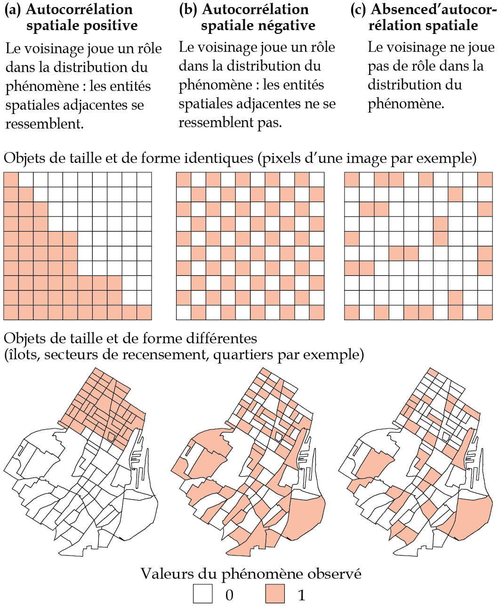
Analyse de la figure 2.2
Quelle est la variable pour laquelle le voisinage joue un rôle important dans sa distribution? L’autocorrélation pour cette variable est-elle positive ou négative? Pourquoi?
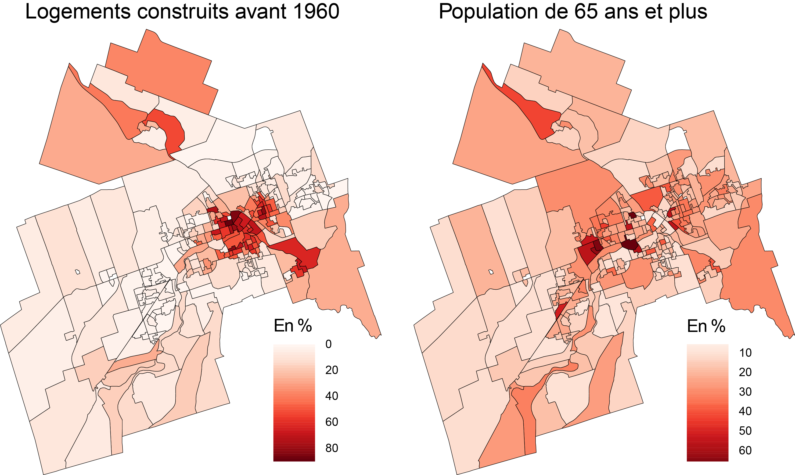
Réponse : L’autocorrélation spatiale semble bien plus forte pour le pourcentage des logements construits avant 1960. Les aires de diffusion (AD) contiguës ou proches dans la partie centrale de la ville ont clairement des pourcentages élevés (rouge foncé) tandis que celles voisines ou proches dans les périphéries présentent des pourcentages faibles. Cela traduit donc une forte autocorrélation spatiale positive. Par contre, la distribution spatiale du pourcentage de personnes de 65 ans et plus semble plus aléatoire, traduisant ainsi une faible autocorrélation spatiale (dépendance spatiale).
Vous avez compris que la simple cartographie d’une variable vous donne une indication de l’autocorrélation spatiale. Pour contre, pour « chiffrer » l’intensité de l’autocorrélation spatiale, il convient de : 1) choisir une matrice de pondération spatiale (selon le voisinage ou la distance) (section 2.2), 2) calculer une mesure d’autocorrélation spatiale à partir de cette matrice (comme l’indice de Moran) (section 2.3).
2.2 Matrices de pondération spatiale
Les mesures d’autocorrélation spatiale visent à vérifier si les entités spatiales contiguës ou proches ont tendance à être semblables (autocorrélation positive) ou dissemblables (autocorrélation négative) en fonction d’un phénomène donné (en fonction d’une variable). Il convient donc avant tout de définir la manière de mesurer la relation d’adjacence ou de proximité entre deux entités spatiales.
Il existe huit principales matrices de pondération spatiale regroupées en deux grandes catégories : celles de contiguïté (basées sur l’adjacence) et celles de proximité (basées sur la distance) (tableau 2.1). Lorsque la couche géographique est composée de points, seules les matrices de proximité peuvent être utilisées.
2.2.1 Matrices de contiguïté
La relation d’adjacence (de contiguïté) vise à déterminer si deux entités spatiales sont ou non voisines selon le partage soit d’un nœud, soit d’un segment (frontière commune). La contiguïté est liée à la notion de topologie qui prend en compte les relations de voisinage entre des entités spatiales, sans tenir compte de leurs tailles et de leurs formes géométriques. Elle peut être représentée à partir d’une matrice de contiguïté (avec une valeur de 1 quand deux entités sont voisines et de 0 pour une situation inverse) ou d’un graphe (formé de points représentant les entités spatiales et de lignes reliant les entités voisines) (figure 2.3).
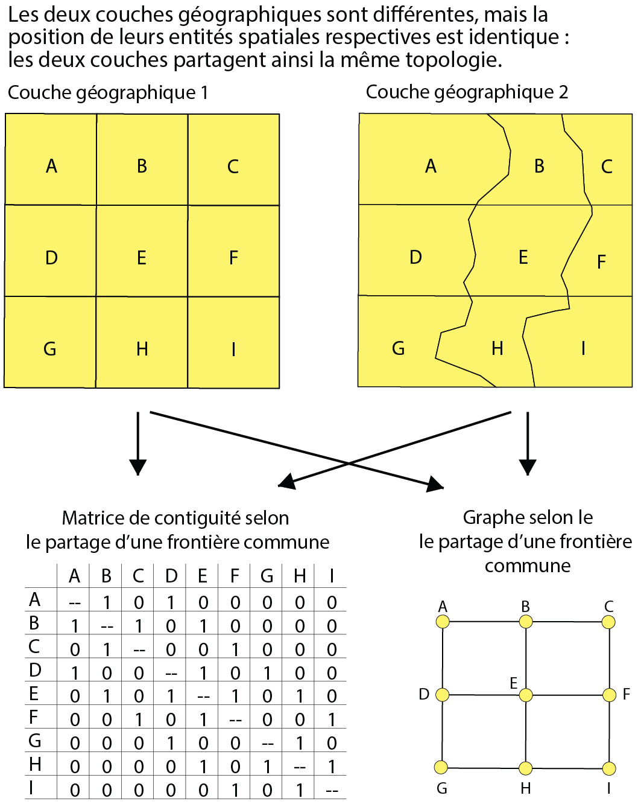
Trois évaluations de la contiguïté sont représentées à la figure 2.4 :
Adjacence selon le partage d’un segment, soit d’une frontière commune entre les polygones (A).
Adjacence selon le partage d’un nœud (B).
-
Ordre d’adjacence selon le partage d’un segment (C). L’ordre d’adjacence indique le nombre de frontières à traverser pour se rendre à l’entité spatiale contiguë, soit :
Ordre 1 : une frontière à traverser pour se rendre dans l’entité spatiale adjacente.
Ordre 2 : deux frontières à traverser pour atteindre les entités de la deuxième couronne.
Ordre 3 : trois frontières à traverser pour atteindre les entités de la troisième couronne.
Etc.
Bien entendu, les ordres d’adjacence peuvent être également définis selon le partage d’un nœud commun.
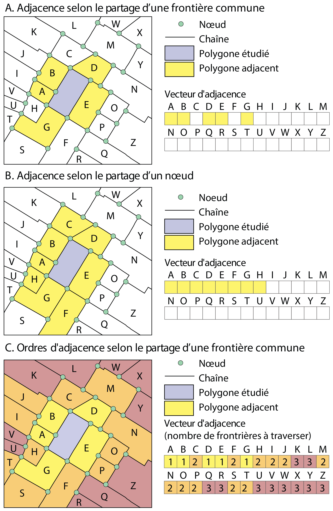
Applicabilité des ordres d’adjacence
Les matrices d’adjacence sont souvent utilisées dans les analyses de diffusion spatiale. Prenons un exemple concret : imaginons que le polygone en gris à la figure 2.4 est un parc. Nous pourrions évaluer le prix moyen des maisons dans les îlots qui font face au parc (ordre 1), toutes choses étant égales par ailleurs (superficie du terrain, superficie habitable, nombre de pièces, etc.). Puis, nous pourrions comparer ce prix moyen à ceux calculés pour les ordres suivants. Il est probable que le prix au premier ordre soit significativement plus élevé qu’au deuxième ordre, voire au troisième ordre. Autre exemple, nous pourrions réaliser un exercice similaire pour des maisons dans des îlots adjacents à un tronçon autoroutier. La relation est probablement inverse : un prix moyen plus bas à l’ordre 1 comparativement aux ordres suivants.
Habituellement appelée \(W\), la matrice de contiguïté est binaire selon le partage tant d’un nœud (Queen en anglais) (équation 2.1) que d’un segment commun (Rook en anglais) (équation 2.2).
\[ w_{ij} = \begin{cases} 1 & \text{si les entités spatiales }i \text{ et }j \text{ ont au moins un nœud commun; } i \ne j\\ 0 & \text{sinon} \end{cases} \tag{2.1}\]
\[ w_{ij} = \begin{cases} 1 & \text{si les entités spatiales }i \text{ et }j \text{ partagent une frontière commune; } i \ne j\\ 0 & \text{sinon} \end{cases} \tag{2.2}\]
Exercice 1. Compléter des matrices de contiguïté
Petit conseil pour la partie A : une matrice de contiguïté est symétrique c’est-à-dire que si le polygone A est voisin du polygone B, alors B est voisin de A! Par conséquent, pour gagner du temps, complétez une ligne et transposez-la en colonne.
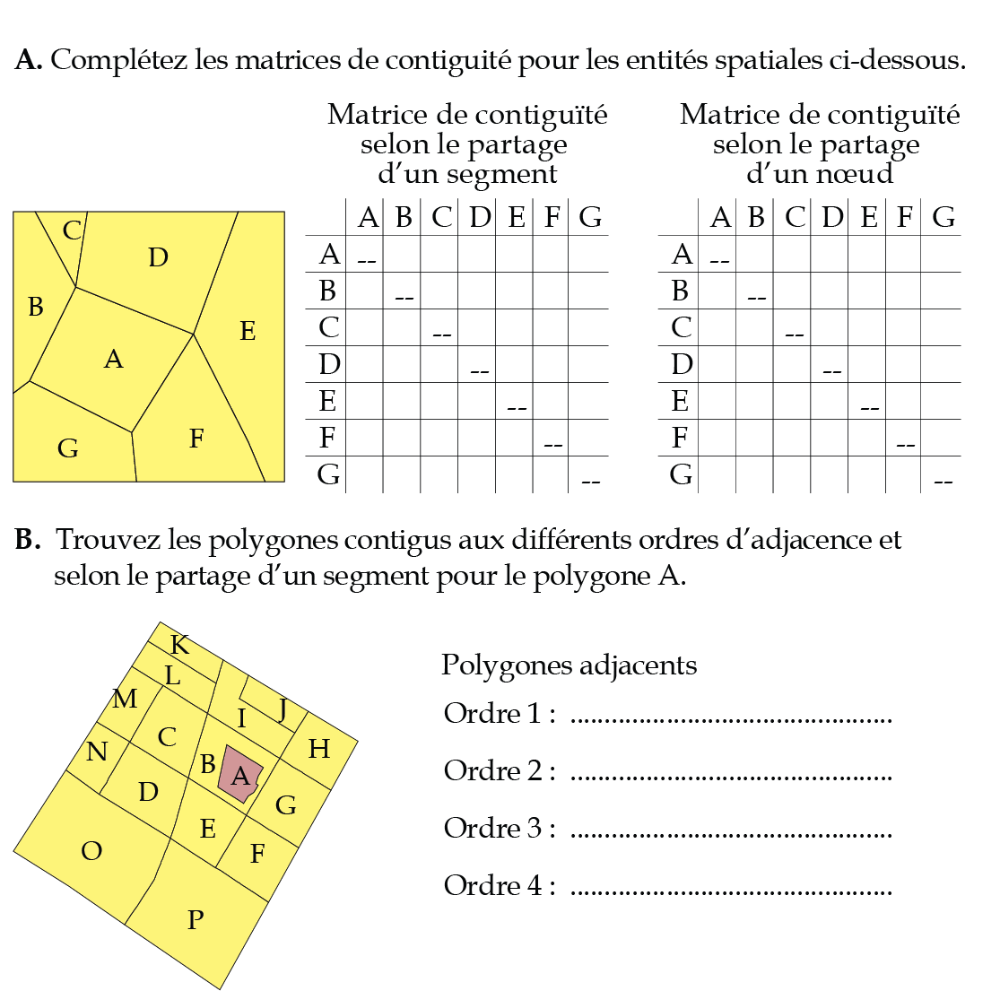
Correction à la section 9.2.1.
2.2.2 Matrices de proximité spatiale
2.2.2.1 Bref retour sur les différents types de distance
Pour calculer des mesures d’autocorrélation spatiale, nous pouvons aussi utiliser des matrices de pondération spatiale basées sur la proximité spatiale. Cette fois, nous ne cherchons pas à vérifier si les entités spatiales adjacentes se ressemblent, mais plutôt à vérifier si les entités spatiales proches les unes des autres se ressemblent. Pour ce faire, nous devons calculer les distances entre les entités spatiales.
Pour construire une matrice de pondération spatiale selon la proximité, nous pouvons utiliser plusieurs types de distance (Apparicio et al. 2017) : certaines sont cartésiennes, d’autres, dites réticulaires, sont calculées à partir d’un réseau de rues (figure 2.6).
Les distances cartésiennes – euclidienne et de Manhattan (équation 2.3 et équation 2.4) – sont facilement calculables à partir des coordonnées géographiques (x,y) dans un SIG ou dans n’importe quel logiciel tableur, de statistique ou de gestion de base de données, etc. Pour cela, la couche géographique doit être dans un système de projection plane. La distance euclidienne représente ainsi la distance à vol d’oiseau entre deux points, tandis que la distance de Manhattan est la somme des deux côtés formant l’angle droit d’un triangle rectangle (l’hypoténuse, le plus grand des côtés du triangle, étant la distance euclidienne) (figure 2.6, a). Si la projection de la couche est sphérique (longitude/latitude), il convient d’utiliser la formule de haversine (basée sur la trigonométrie sphérique) pour obtenir la distance à vol d’oiseau (équation 2.5).
Par contre, comme leurs noms l’indiquent, les distances réticulaires nécessitent un réseau de rues dans un SIG (notamment avec l’extension Network Analyst d’ArcGIS Pro) ou dans R (notamment avec le package R5R) pour calculer le chemin le plus rapide (chapitre 5).
\[ d_{ij} = \sqrt{(x_i-x_j)^2+(y_i-y_j)^2} \tag{2.3}\]
\[ d_{ij} = \lvert x_i-x_j \rvert + \lvert y_i-y_j \rvert \tag{2.4}\]
\[ d_{ij} = 2R \cdot \text{ arcsin} \left( \sqrt{\text{sin}^2 \left( \frac{\delta _i - \delta _j}{2} \right) + \text{cos }\delta _i \cdot \text{cos }\delta _j \cdot \text{sin}^2 \left( \frac{\phi _i - \phi _j}{2} \right)} \right) \tag{2.5}\]
avec \(R\) étant le rayon de la terre; \(\delta _i\) et \(\delta _j\) les coordonnées de longitude pour les points \(i\) et \(j\); \(\phi _i\) et \(\phi _j\) les coordonnées de latitude pour les points \(i\) et \(j\).
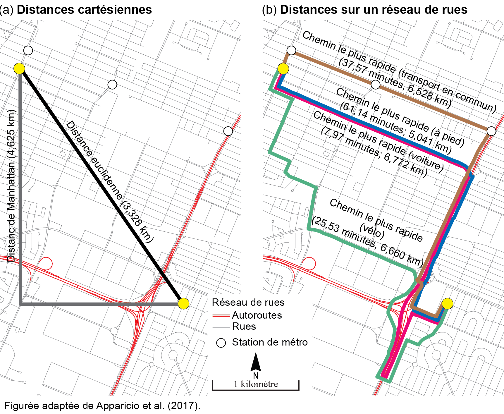
2.2.2.2 Matrice de distance binaire (de connectivité)
À partir d’une matrice de distance entre les entités spatiales d’une couche géographique, il est possible de créer une matrice de pondération binaire (équation 2.6). Ce type de matrice est habituellement appelée matrice de connectivité. Il convient alors de fixer un seuil de distance maximal. Par exemple, avec un seuil de 500 mètres, \(w_{ij}=1\) si la distance entre les entités spatiales \(i\) et \(j\) est inférieure ou égale à 500 mètres; sinon \(w_{ij}=0\). Notez que pour des lignes et des polygones, la distance est habituellement calculée à partir de leurs centroïdes.
\[ w_{ij} = \begin{cases} 1 & \text{si }d_{ij}\leq{\bar{d}}\text{; } i \ne j\\ 0 & \text{sinon} \end{cases} \tag{2.6}\]
avec \(d_{ij}\) étant la distance entre les entités spatiales \(i\) et \(j\), et \(\bar{d}\) étant un seuil de distance maximal fixé par la personne utilisatrice (par exemple, 500 mètres).
En guise d’exemple, à la figure 2.7, seuls les polygones jaunes seraient considérés comme voisins du polygone bleu avec un seuil de distance maximal fixé à 2,5 kilomètres (valeur de 1); les roses se verraient affecter la valeur de 0.
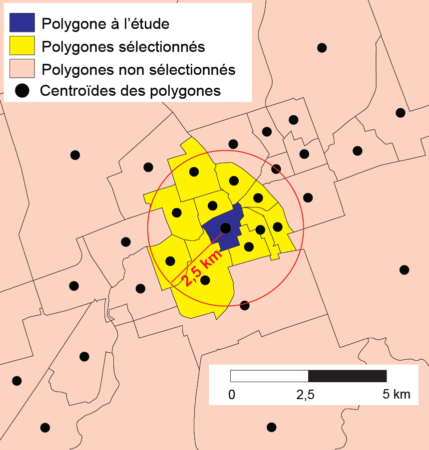
2.2.2.3 Matrices basées sur la distance
À partir d’une matrice de distance entre les entités spatiales, les pondérations peuvent être calculées avec l’inverse de la distance (\(1/d_{ij}\)) ou l’inverse de la distance au carré (\(1/d_{ij^2}\)) (équation 2.7). Analysons le graphique à la figure 2.8.
Premièrement, nous constatons que plus la distance est grande, plus la valeur de la pondération est faible et inversement. De la sorte, nous accordons un rôle plus important aux entités spatiales proches les unes des autres que celles éloignées.
Deuxièmement, les pondérations chutent beaucoup plus rapidement avec l’inverse de la distance au carré qu’avec l’inverse de la distance. Autrement dit, le recours à une matrice de pondération calculée avec l’inverse de la distance au carré a comme effet d’accorder un poids plus important aux entités géographiques très proches.
\[ w_{ij} = \begin{cases} \frac{1}{d_{ij}^{\gamma}} &\\ 0 & \text{si } i=j \end{cases} \tag{2.7}\]
avec \(\gamma = 1\) pour une matrice de l’inverse de la distance et \(\gamma = 2\) pour l’inverse de la distance au carré.
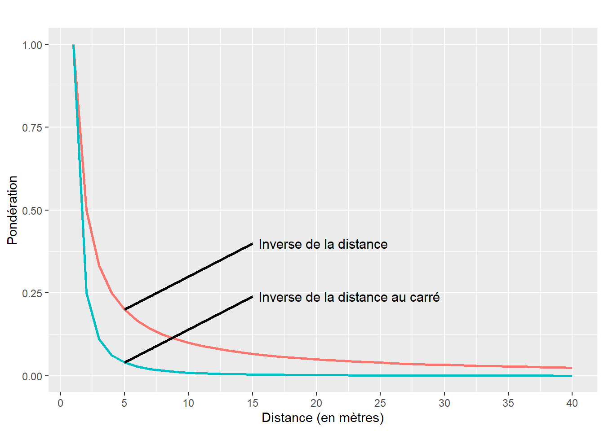
Pondération avec l’exponentielle inverse
Dans un excellent livre intitulé Économétrie spatiale appliquée des microdonnées, Jean Dubé et Diego Legros (2014) proposent de transformer la matrice des distances avec l’inverse de l’exponentielle (ou l’exponentielle négative de la distance) (équation 2.8). Comparativement à l’inverse de la distance au carré, cette opération fait chuter encore plus rapidement les pondérations.
\[ w_{ij} = \begin{cases} \frac{1}{e^{d_{ij}}} = e^{-d_{ij}} &\\ 0 & \text{si } i=j \end{cases} \tag{2.8}\]
Notez que l’équation 2.7 peut être légèrement modifiée en introduisant un seuil maximal de la distance au-delà duquel les pondérations sont mises à 0 (équation 2.9). Autrement dit, cela permet de ne pas tenir compte des entités spatiales distantes à plus d’un seuil fixé par l’analyste, ce qui est particulièrement intéressant lorsque vous analysez un phénomène dont la diffusion (ou propagation) cesse ou est très minime au-delà d’une certaine distance. Par exemple, pour la propagation du bruit routier, le seuil de 300 mètres est souvent utilisé. Par conséquent, une mesure d’autocorrélation spatiale sur des mesures de bruit routier devrait probablement recourir à un seuil maximal de 300 mètres. Autre exemple, la superficie du territoire vital diffère selon les espèces animales (cerf, caribou, ours et loup, par exemple). Par conséquent, une ou un biologiste calculant des mesures d’autocorrélation spatiale risque aussi de fixer un seuil maximal différent selon l’espèce étudiée.
\[ w_{ij} = \begin{cases} \frac{1}{d_{ij}^{\gamma}} & \text{si }d_{ij}\leq{\bar{d}}\\ 0 & \text{si }d_{ij}>{\bar{d}}\\ 0 & \text{si } i=j \end{cases} \tag{2.9}\]
Calculer le rayon maximal à partir d’une aire
Admettons que la superficie du territoire vital d’une espèce soit de 50 hectares, soit 0,5 km2 ou 500 000 m2. La formule bien connue pour calculer la superficie d’un cercle est \(S = \pi r^2\) avec \(S\) et \(r\) étant respectivement la superficie et le rayon. Par conséquent, celle du rayon est \(r = \sqrt{\frac{S}{\pi}}\). Pour trouver le rayon, vous devez taper sqrt(500000 / pi) dans la console de R et obtenir ainsi une distance de 398.9423 qui pourrait être arrondie à 400 mètres.
2.2.2.4 Matrices selon le critère des plus proches voisins
Une autre façon très utilisée pour définir une matrice de proximité à partir d’une matrice de distance consiste à retenir uniquement les n plus proches voisins. La matrice est aussi binaire avec les valeurs de 1 si les observations sont parmi les n plus proches de l’entité spatiale \(i\) et de 0 pour une situation inverse.
2.2.3 Standardisation des matrices de pondération spatiale en ligne
Il est recommandé de standardiser les matrices de pondération en ligne. La somme de la matrice de pondération sera alors égale au nombre d’entités spatiales de la couche géographique.
Quel est l’intérêt de la standardisation?
Nous verrons dans les sections suivantes que ces matrices sont utilisées pour évaluer le degré d’autocorrélation spatiale globale et locale. Or, il est fréquent de comparer les valeurs des mesures d’autocorrélation spatiale obtenues avec différentes matrices d’adjacence et de proximité (contiguïté selon le partage d’un nœud, d’une frontière commune; inverse de la distance, inverse de la distance au carré, etc.). Autrement dit, la standardisation des matrices de pondération spatiale permet de vérifier si le degré de (dis)ressemblance des entités spatiales en fonction d’une variable donnée est plus fort avec une matrice de contiguïté, d’inverse de la distance ou encore d’inverse de la distance au carré, etc.
Pour illustrer comment réaliser une standardisation, nous utilisons une couche géographique comprenant peu d’entités spatiales, soit celle des quatre arrondissements de la ville de Sherbrooke (figure 2.9).
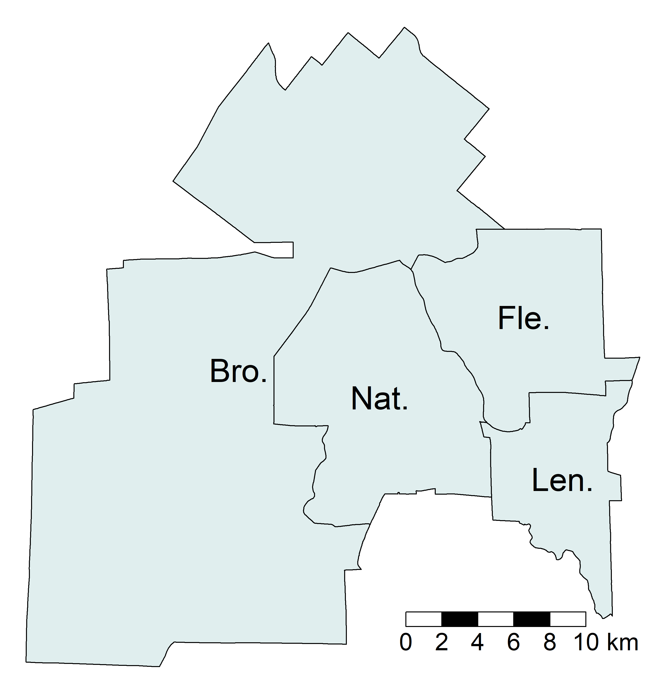
Au tableau 2.2, différentes matrices de contiguïté et de distance ont été calculées, puis standardisées. Voici comment interpréter les différentes sections du tableau :
Contiguïté selon le partage d’une frontière commune. La valeur de 1 signale que deux arrondissements sont voisins, sinon la valeur est à 0. Tel qu’indiqué aux équation 2.1 et équation 2.2, un arrondissement ne peut être voisin de lui-même (ex.: valeur de 0 pour la cellule
Bro.etBro.). L’arrondissement de Brompton–Rock Forest–Saint-Élie–Deauville (Bro.) a deux voisins, soit ceux des Nations et de Fleurimont (Nat.etFle.), comme indiqué par la valeur 2 dans la colonnetotal. Par contre, les arrondissements des Nations et de Fleurimont sont voisins de tous les autres (valeur de 3 dans la colonnetotal).Standardisation de la matrice de contiguïté. Il suffit de diviser chaque valeur de la matrice de contiguïté par la somme de la ligne correspondante. De la sorte, la somme de chaque ligne est égale à 1 et la somme de l’ensemble des valeurs de la matrice est égale au nombre d’entités spatiales (ici 4).
Distance (km). Nous avons calculé la distance euclidienne en kilomètres entre les centroïdes des arrondissements.
Inverse de la distance. Les valeurs sont obtenues avec la formule \(1/_{dij}\). Par exemple, entre
Bro.etNat., nous avons \(1/7,9930 = 0,1251\).Inverse de la distance au carré. Les valeurs sont obtenues avec la formule \(1/_{dij^2}\). Par exemple, entre
Bro.etNat., nous avons \(1/7,9930^2 = 0,0160\).Standardisation de l’inverse de la distance. Comme précédemment, il suffit de diviser chaque valeur de la matrice par la somme de la ligne correspondante. Par exemple, pour
Bro.etNat., nous avons \(0,1251 / 0,3241 = 0,3860\). Remarquez que la somme des lignes est bien égale à 1.Standardisation de l’inverse de la distance au carré. Comme précédemment, il suffit de diviser chaque valeur de la matrice par la somme de la ligne correspondante. Par exemple, pour
Bro.etNat., nous avons \(0,0160 / 0,0360 = 0,4440\). Remarquez que la somme des lignes est bien égale à 1.
| Arrondissement | Bro. | Nat. | Len. | Fle. | Somme (lignes) |
|---|---|---|---|---|---|
| Matrice de contiguïté selon le partage d'une frontière commune | |||||
| Bro. | 0,0000 | 1,0000 | 0,0000 | 1,0000 | 2,0000 |
| Nat. | 1,0000 | 0,0000 | 1,0000 | 1,0000 | 3,0000 |
| Len. | 0,0000 | 1,0000 | 0,0000 | 1,0000 | 2,0000 |
| Fle. | 1,0000 | 1,0000 | 1,0000 | 0,0000 | 3,0000 |
| Standardisation de la matrice de contiguïté | |||||
| Bro. | 0,0000 | 0,5000 | 0,0000 | 0,5000 | 1,0000 |
| Nat. | 0,3330 | 0,0000 | 0,3330 | 0,3330 | 1,0000 |
| Len. | 0,0000 | 0,5000 | 0,0000 | 0,5000 | 1,0000 |
| Fle. | 0,3330 | 0,3330 | 0,3330 | 0,0000 | 1,0000 |
| Distance (km) | |||||
| Bro. | 0,0000 | 7,9930 | 18,9940 | 16,1140 | |
| Nat. | 7,9930 | 0,0000 | 11,1190 | 9,1650 | |
| Len. | 18,9940 | 11,1190 | 0,0000 | 9,2590 | |
| Fle. | 16,1140 | 9,1650 | 9,2590 | 0,0000 | |
| Matrice selon l'inverse de la distance | |||||
| Bro. | 0,0000 | 0,1251 | 0,0526 | 0,0621 | 0,2398 |
| Nat. | 0,1251 | 0,0000 | 0,0899 | 0,1091 | 0,3241 |
| Len. | 0,0526 | 0,0899 | 0,0000 | 0,1080 | 0,2505 |
| Fle. | 0,0621 | 0,1091 | 0,1080 | 0,0000 | 0,2792 |
| Matrice selon l'inverse de la distance au carré | |||||
| Bro. | 0,0000 | 0,0160 | 0,0030 | 0,0040 | 0,0230 |
| Nat. | 0,0160 | 0,0000 | 0,0080 | 0,0120 | 0,0360 |
| Len. | 0,0030 | 0,0080 | 0,0000 | 0,0120 | 0,0230 |
| Fle. | 0,0040 | 0,0120 | 0,0120 | 0,0000 | 0,0280 |
| Standardisation de l'inverse de la distance | |||||
| Bro. | 0,0000 | 0,5220 | 0,2190 | 0,2590 | 1,0000 |
| Nat. | 0,3860 | 0,0000 | 0,2770 | 0,3370 | 1,0000 |
| Len. | 0,2100 | 0,3590 | 0,0000 | 0,4310 | 1,0000 |
| Fle. | 0,2220 | 0,3910 | 0,3870 | 0,0000 | 1,0000 |
| Standardisation de l'inverse de la distance au carré | |||||
| Bro. | 0,0000 | 0,6960 | 0,1300 | 0,1740 | 1,0000 |
| Nat. | 0,4440 | 0,0000 | 0,2220 | 0,3330 | 1,0000 |
| Len. | 0,1300 | 0,3480 | 0,0000 | 0,5220 | 1,0000 |
| Fle. | 0,1430 | 0,4290 | 0,4290 | 0,0000 | 1,0000 |
2.2.4 Construction de matrices de pondération spatiale dans R
Construction des matrices dans R avec le packagespdep.
Le package spdep dispose de différentes fonctions pour construire des matrices de contiguïté, de connectivité et de distance :
poly2nbpour des matrices de contiguïté (section 2.2.4.1);nblagetnblag_cumulpour des matrices de contiguïté avec des ordres d’adjacence (section 2.2.4.2);dnearneighpour des matrices de connectivité (section 2.2.4.3);as.matrix(dist(coords))etmat2listwpour des matrices de distance (section 2.2.4.4);knn2nbpour des matrices selon le critère des plus proches voisins (section 2.2.4.5).
2.2.4.1 Matrices de pondération spatiale selon la contiguïté
Pour créer des matrices de pondération spatiale selon la contiguïté décrites à la section 2.2.1, nous utilisons deux fonctions du package spdep :
poly2nb(Nom de l'objet sf, queen=TRUE)crée une matrice de contiguïté sous la forme d’une classenb(A neighbours list with class nb). Avec le paramètrequeen=TRUE, la contiguïté est évaluée selon le partage d’un nœud; avecqueen=FALSE, la contiguïté est évaluée selon le partage d’un segment (frontière). La matrice spatiale comprend une ligne par secteur de recensement avec les index des polygones adjacents. Par exemple,Queen[[1]]renvoie la liste des polygones voisins à la première entité spatiale, soit2 14 15 16 23 32, c’est-à-dire six voisins.nb2listw(objet nb, zero.policy=TRUE, style = "W")crée une matrice de pondération spatiale à partir de n’importe quelle matrice spatiale (de contiguïté ou de distance). Leparamètre style = "W", qui est par défaut, permet de standardiser la matrice en ligne. Par exemple,W.Queen$weights[[1]]renvoie les valeurs des pondérations pour la première entité spatiale, soit0.1666667 0.1666667 0.1666667 0.1666667 0.1666667 0.1666667(0,1666667 = 1 / 6 voisin). Pour obtenir une matrice non standardisée, vous devez écrirestyle = "B", alorsW.Queen$weights[[1]]renverra les valeurs de1 1 1 1 1 1.
library(sf) # pour importer des couches géographiques
library(spdep) # pour construire les matrices de pondération
## Importation de la couche des secteurs de recensement de la ville de Sherbrooke
SR <- st_read(dsn = "data/chap02/Recen2021Sherbrooke.gpkg",
layer = "DR_SherbSRDonnees2021", quiet=TRUE)
## Matrice selon le partage d'un nœud (Queen)
# Création de la matrice spatiale
Queen <- poly2nb(SR, queen=TRUE)
# Affichage de la première ligne de la matrice
Queen[[1]][1] 2 14 15 16 23 32# Création de la matrice de pondération avec une standardisation en ligne
W.Queen <- nb2listw(Queen, zero.policy=TRUE, style = "W")
# Affichage de la première ligne des pondérations
W.Queen$weights[[1]][1] 0.1666667 0.1666667 0.1666667 0.1666667 0.1666667 0.1666667cat("La somme de la première ligne de la matrice de pondération est égale à",
sum(W.Queen$weights[[1]]))La somme de la première ligne de la matrice de pondération est égale à 1## Matrice selon le partage d'un segment (Rook)
Rook <- poly2nb(SR, queen=FALSE)
W.Rook <- nb2listw(Rook, zero.policy=TRUE, style = "W")
## Comparaison des deux matrices de contiguïté
# Résultat de la matrice de pondération (Queen)
summary(W.Queen)Characteristics of weights list object:
Neighbour list object:
Number of regions: 50
Number of nonzero links: 272
Percentage nonzero weights: 10.88
Average number of links: 5.44
Link number distribution:
1 2 3 4 5 6 7 8 10
1 2 2 9 13 9 8 5 1
1 least connected region:
41 with 1 link
1 most connected region:
29 with 10 links
Weights style: W
Weights constants summary:
n nn S0 S1 S2
W 50 2500 50 20.3056 205.5251# Résultat de la matrice de pondération (Rook)
summary(W.Rook)Characteristics of weights list object:
Neighbour list object:
Number of regions: 50
Number of nonzero links: 248
Percentage nonzero weights: 9.92
Average number of links: 4.96
Link number distribution:
1 2 3 4 5 6 7 9
1 2 4 9 17 11 5 1
1 least connected region:
41 with 1 link
1 most connected region:
29 with 9 links
Weights style: W
Weights constants summary:
n nn S0 S1 S2
W 50 2500 50 21.84674 205.0781La syntaxe ci-dessous permet de visualiser et de comparer les graphes selon le partage d’un nœud (Queen) ou d’un segment commun (Rook).
par(mfrow=c(1,2)) # permet d'avoir quatre graphiques (2x2)
coords <- st_coordinates(st_centroid(SR))
## Graphe selon le partage d'un nœud
plot(st_geometry(SR), border="gray", lwd=2, col="wheat")
plot(Queen, coords, add=TRUE, col="red", lwd=2)
title(main="Queen", font.main= 1)
## Graphe selon le partage d'une frontière commune
plot(st_geometry(SR), border="gray", lwd=2, col="wheat")
plot(Rook, coords, add=TRUE, col="red", lwd=2)
title(main="Rook", font.main= 1)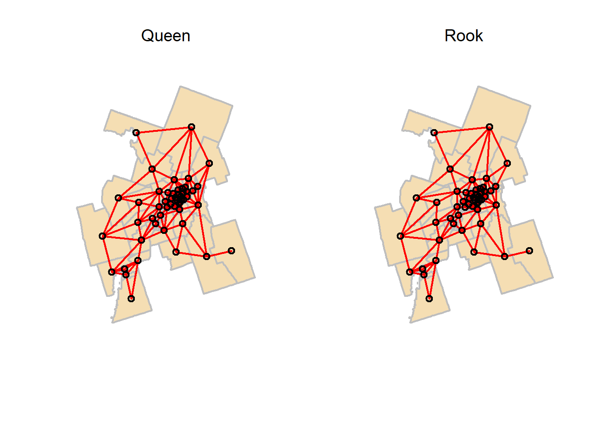
2.2.4.2 Matrices de pondération spatiale selon la contiguïté et un ordre d’adjacence
Pour décrire la construction des matrices de contiguïté avec un ordre d’adjacence (décrites à la section 2.2.1), nous utilisons une couche géographique comprenant peu d’entités spatiales, soit celle des quatre arrondissements de la ville de Sherbrooke (figure 1). Le code ci-dessous permet d’obtenir les résultats suivants :
Rook <- poly2nb(Arrondissements, queen=TRUE): matrice d’ordre 1 selon le partage d’un segment.str(Rook): pour chaque arrondissement, la liste des arrondissements adjacents d’ordre 1.Rook.Ordre2 <- nblag(Rook, 2): création d’une matrice d’ordre 2 avec la fonctionnblag.str(Rook.Ordre2[[1]]): liste des voisins d’ordre 1. Bien entendu, le résultat est identique àstr(Rook).str(Rook.Ordre2[[2]]): liste des voisins d’ordre 2.Rook.Ordre2Cumule <- nblag_cumul(Rook.Ordre2): fusion des deux listes en une seule avec la fonctionnblag_cumul.
Arrondissements <- st_read("data/chap02/Arrondissements.shp", quiet=TRUE)
## Matrice de contiguïté d'ordre 1 selon le partage d'un segment (Rook)
Rook <- poly2nb(Arrondissements, queen=TRUE)
str(Rook)List of 4
$ : int [1:2] 2 4
$ : int [1:3] 1 3 4
$ : int [1:2] 2 4
$ : int [1:3] 1 2 3
- attr(*, "class")= chr "nb"
- attr(*, "region.id")= chr [1:4] "1" "2" "3" "4"
- attr(*, "call")= language poly2nb(pl = Arrondissements, queen = TRUE)
- attr(*, "type")= chr "queen"
- attr(*, "sym")= logi TRUE## Matrice de contiguïté d'ordre 2 selon le partage d'un segment (Rook)
Rook.Ordre2 <- nblag(Rook, 2)
## Rook.Ordre2 comprend deux listes : l'une pour l'ordre 1 et l'autre pour l'autre 2.
str(Rook.Ordre2[[1]])List of 4
$ : int [1:2] 2 4
$ : int [1:3] 1 3 4
$ : int [1:2] 2 4
$ : int [1:3] 1 2 3
- attr(*, "class")= chr "nb"
- attr(*, "region.id")= chr [1:4] "1" "2" "3" "4"
- attr(*, "call")= language poly2nb(pl = Arrondissements, queen = TRUE)
- attr(*, "type")= chr "queen"
- attr(*, "sym")= logi TRUEstr(Rook.Ordre2[[2]])List of 4
$ : int 3
$ : int 0
$ : int 1
$ : int 0
- attr(*, "class")= chr "nb"
- attr(*, "region.id")= chr [1:4] "1" "2" "3" "4"
- attr(*, "sym")= logi TRUE## La fonction nblag_cumul permet de combiner les deux ordres dans une seule liste
Rook.Ordre2Cumule <- nblag_cumul(Rook.Ordre2)
str(Rook.Ordre2Cumule)List of 4
$ : int [1:3] 2 3 4
$ : int [1:3] 1 3 4
$ : int [1:3] 1 2 4
$ : int [1:3] 1 2 3
- attr(*, "region.id")= chr [1:4] "1" "2" "3" "4"
- attr(*, "call")= language nblag_cumul(nblags = Rook.Ordre2)
- attr(*, "class")= chr "nb"## Création de la matrice de pondération spatiale standardisée
WRook.Ordre2Cumule <- nb2listw(Rook.Ordre2Cumule, zero.policy=TRUE, style = "W")La figure 2.10 permet de constater qu’au second ordre, chacun des arrondissements est relié aux trois autres.
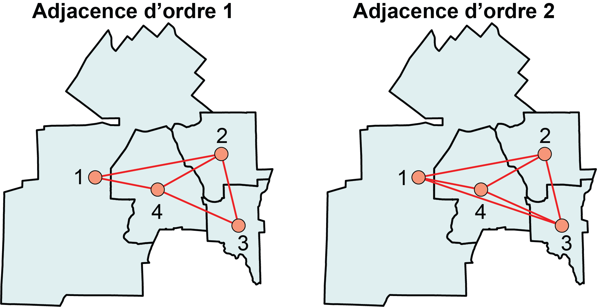
Reprenons la couche des secteurs de recensement de la ville de Sherbrooke pour construire des matrices d’adjacence d’ordre 1 à 3.
# Création des matrices d'ordre 1, 2 et 3
Queen1 <- poly2nb(SR, queen=TRUE)
Queen2 <- nblag_cumul(nblag(Queen1, 2))
Queen3 <- nblag_cumul(nblag(Queen1, 3))
# Création des matrices
W.Queen1 <- nb2listw(Queen, zero.policy=TRUE, style = "W")
W.Queen2 <- nb2listw(Queen2, zero.policy=TRUE, style = "W")
W.Queen3 <- nb2listw(Queen3, zero.policy=TRUE, style = "W")2.2.4.3 Matrice de connectivité (matrice distance binaire)
La fonction dnearneigh(sf points, d1=, d2=) crée une matrice de connectivité (décrite à la section 2.2.2) à partir d’une couche de points. Les paramètres d1 et d2 permettent de spécifier le rayon de recherche (ex. : avec d1 = 0 et d2 = 2500, le seuil maximal de distance est de 2500 mètres).
Si votre couche sf comprend des lignes ou des polygones, utilisez la fonction st_centroid ou st_point_on_surface() pour les convertir en points (section 1.2.2).
## Conversion des polygones en points avec st_centroid
SR.centroides <- st_centroid(SR)
## Matrice binaire avec un seuil de 2500 mètres
Connect2500m <- dnearneigh(SR.centroides, d1 = 0, d2 = 2500)
## Matrice de pondération spatiale standardisée en ligne
W.Connect2500m <- nb2listw(Connect2500m, zero.policy=TRUE, style = "W")2.2.4.4 Matrices de pondération spatiale selon l’inverse de la distance et l’inverse de la distance au carré
Dans la section 2.2.3, nous avons présenté les matrices de l’inverse de la distance et de l’inverse de la distance au carré. Le code ci-dessous, qui permet de les créer, comprend les étapes suivantes :
Récupération des coordonnées géographiques des entités spatiales.
Création de la matrice de distance euclidienne \(n \times n\) (\(n\) étant le nombre d’entités spatiales de la couche).
Calcul des matrices d’inverse de la distance et d’inverse de la distance au carré.
Standardisation de ces deux matrices et transformation dans des objets
listwavec la fonctionmat2listw.
## Coordonnées des centroïdes des entités spatiales
coords <- st_coordinates(SR.centroides)
## Création de la matrice de distance
distances <- as.matrix(dist(coords, method = "euclidean"))
# S'assurer que la diagonale de la matrice est à 0
diag(distances) <- 0
## Matrices inverse de la distance et inverse de la distance au carré
InvDistances <- ifelse(distances!=0, 1/distances, distances)
InvDistances2 <- ifelse(distances!=0, 1/distances^2, distances)
## Matrices de pondération spatiale standardisées en ligne
W_InvDistances <- mat2listw(InvDistances, style="W")
W_InvDistances2 <- mat2listw(InvDistances2, style="W")
## Visualisation des valeurs des pondération pour la première entité spatiale
round(W_InvDistances$weights[[1]],4) [1] 0.0688 0.0505 0.0377 0.0330 0.0220 0.0191 0.0152 0.0116 0.0155 0.0220
[11] 0.0303 0.0382 0.0582 0.0677 0.0661 0.0366 0.0373 0.0316 0.0248 0.0123
[21] 0.0178 0.0241 0.0055 0.0084 0.0083 0.0084 0.0106 0.0232 0.0125 0.0231
[31] 0.0425 0.0192 0.0164 0.0049 0.0086 0.0071 0.0062 0.0061 0.0054 0.0049
[41] 0.0078 0.0050 0.0032 0.0043 0.0036 0.0030 0.0035 0.0042 0.0037# La somme de la ligne est bien égale à 1
sum(W_InvDistances$weights[[1]])[1] 1Intégration d’autres types de distance
À la section 2.2.2.1, nous avons vu que plusieurs types de distances peuvent être utilisés : cartésiennes (euclidienne et de Manhattan) et réticulaires (chemin le plus rapide à pied, à vélo, en automobile et en transport en commun).
Pour construire une matrice de distance de Manhattan, vous devez changer la valeur du paramètre method de la fonction dist comme suit : as.matrix(dist(coords, method = "manhattan")).
Pour intégrer une distance réticulaire, vous devez la calculer, soit dans R (chapitre 5), soit dans un logiciel SIG (ArcGIS Pro avec l’extension Network Analyst par exemple) et l’importer dans R. Le reste du code sera alors identique.
Nous avons vu qu’il est possible d’utiliser une matrice de distance en fixant une distance maximale au-delà de laquelle les pondérations sont mises à 0 (équation 2.9 à la section 2.2.2.1). Le code ci-dessous permet de créer des matrices de pondération standardisées avec l’inverse de la distance et l’inverse de la distance au carré avec des seuils de 2500 et de 5000 mètres.
## Coordonnées des centroïdes des entités spatiales
coords <- st_coordinates(SR.centroides)
## Création de la matrice de distance
distances <- as.matrix(dist(coords, method = "euclidean"))
## Création de différentes matrices avec différents seuils
InvDistances.2500m <- ifelse(distances<=2500 & distances!=0, 1/distances, 0)
InvDistances.5000m <- ifelse(distances<=5000 & distances!=0, 1/distances, 0)
InvDistances2.2500m <- ifelse(distances<=2500 & distances!=0, 1/distances^2, 0)
InvDistances2.5000m <- ifelse(distances<=5000 & distances!=0, 1/distances^2, 0)
## Matrices de pondération spatiale standardisées en ligne
W_InvDistances.2500 <- mat2listw(InvDistances.2500m, style="W")
W_InvDistances.5000 <- mat2listw(InvDistances.5000m, style="W")
W_InvDistances2.2500 <- mat2listw(InvDistances2.2500m, style="W")
W_InvDistances2.5000 <- mat2listw(InvDistances2.5000m, style="W")Spécifier un seuil de distance peut toutefois être problématique. Par exemple, sur les 50 secteurs de recensement de la ville de Sherbrooke, 19 n’ont pas de voisins à 2500 mètres, indiqués par le résultat suivant :
## 19 regions with no links:
## 23 24 25 30 34 35 36 37 38 39 40 41 42 43 44 45 47 49 50
summary(W_InvDistances.2500, zero.policy=TRUE)Characteristics of weights list object:
Neighbour list object:
Number of regions: 50
Number of nonzero links: 188
Percentage nonzero weights: 7.52
Average number of links: 3.76
19 regions with no links:
23 24 25 30 34 35 36 37 38 39 40 41 42 43 44 45 47 49 50
Link number distribution:
0 1 2 3 4 6 7 8 9 10 11 12 13
19 6 2 2 4 2 2 3 4 1 2 1 2
6 least connected regions:
21 26 31 33 46 48 with 1 link
2 most connected regions:
12 13 with 13 links
Weights style: W
Weights constants summary:
n nn S0 S1 S2
W 31 961 31 19.09079 128.6954Même avec un seuil de 5000 mètres, il reste encore 11 SR sans voisins.
summary(W_InvDistances.5000, zero.policy=TRUE)Characteristics of weights list object:
Neighbour list object:
Number of regions: 50
Number of nonzero links: 532
Percentage nonzero weights: 21.28
Average number of links: 10.64
11 regions with no links:
35 36 37 39 40 41 42 43 47 49 50
Link number distribution:
0 1 2 3 5 6 7 8 9 10 11 16 18 19 20 21 22 23
11 2 2 4 2 1 1 2 1 1 1 2 2 4 2 4 7 1
2 least connected regions:
24 30 with 1 link
1 most connected region:
12 with 23 links
Weights style: W
Weights constants summary:
n nn S0 S1 S2
W 39 1521 39 12.11283 162.9801Réduction de la taille des matrices de distance
Plusieurs logiciels (notamment ArcGIS Pro et GeoDa) réduisent par défaut la taille des matrices de distance de la façon suivante : 1) construction d’une matrice de distance uniquement pour l’entité la plus proche (la matrice résultante est donc de dimension \(n \times 1\)); 2) obtention de la distance maximale dans cette matrice, soit la distance la plus grande entre une entité spatiale et celle la plus proche; 3) construction de la matrice de distance finale avec comme seuil la distance maximale obtenue à l’étape précédente.
Cette réduction procure deux avantages importants :
Une diminution considérable des temps de calcul, surtout pour les couches géographiques comprenant un nombre très élevé d’entités spatiales. Par exemple, avec une couche de 50 entités spatiales, la matrice des distances comprendra 2500 valeurs (50 \(\times\) 50 = 2500) tandis qu’avec 1000 entités spatiales, elle en comprendra un million (1000 \(\times\) 1000 = 1 000 000).
Comme décrit plus haut, il est préférable d’éviter d’avoir une matrice de distance avec des entités spatiales sans voisins, puisque cela a un impact négatif sur les mesures d’autocorrélation spatiale.
La syntaxe ci-dessous permet ainsi de construire des matrices de pondération (inverse de la distance et inverse de la distance au carré) à partir de la distance maximale et un SR et son voisin le plus proche.
## Coordonnées des centroïdes des entités spatiales
coords <- st_coordinates(SR.centroides)
## Trouver le plus proche voisin
k1 <- knn2nb(knearneigh(coords))
## Affichage des distances pour les 50 SR au le plus proche
round(unlist(nbdists(k1,coords)),0) [1] 1352 563 563 659 833 1275 1275 1299 2136 1553 1171 833
[13] 953 953 1024 1024 936 936 1149 1242 2378 1473 3863 4963
[25] 2841 1755 1755 2294 1507 4002 1843 1710 2486 2977 10953 6965
[37] 5331 4077 6717 6892 6892 6335 5639 3530 4202 1636 6662 1636
[49] 10745 10034## Trouver la distance maximale
plusprochevoisin.max <- max(unlist(nbdists(k1,coords)))
cat("Distance maximale au plus proche voisin :", round(plusprochevoisin.max,0), "mètres")Distance maximale au plus proche voisin : 10953 mètres## Matrice de distance avec la valeur maximale
# les voisins les plus proches avec le seuil de distance maximal
Voisins.DistMax <- dnearneigh(coords, 0, plusprochevoisin.max)
# Distances avec le seuil maximum
distances <- nbdists(Voisins.DistMax, coords)
# Inverse de la distance
InvDistances <- lapply(distances, function(x) (1/x))
# Inverse de la distance au carré
InvDistances2 <- lapply(distances, function(x) (1/x^2))
## Matrices de pondération spatiale standardisées en ligne
W_InvDistances <- nb2listw(Voisins.DistMax, glist = InvDistances, style = "W")
W_InvDistances2 <- nb2listw(Voisins.DistMax, glist = InvDistances2, style = "W")2.2.4.5 Matrices de pondération spatiale selon le critère des plus proches voisins
La fonction knearneigh du package spdep crée des matrices de distance selon le critère des plus proches voisins (décrit à la section 2.2.2.4), dont le nombre est fixé avec le paramètre k.
## Coordonnées géographiques des centroïdes des polygones
coords <- st_coordinates(st_centroid(SR))
## Matrices des plus proches voisins de 2 à 5
k2 <- knn2nb(knearneigh(coords, k = 2))
k3 <- knn2nb(knearneigh(coords, k = 3))
k4 <- knn2nb(knearneigh(coords, k = 4))
k5 <- knn2nb(knearneigh(coords, k = 5))
## Matrices de pondération spatiale standardisées en ligne
W.k2 <- nb2listw(k2, zero.policy=FALSE, style = "W")
W.k3 <- nb2listw(k3, zero.policy=FALSE, style = "W")
W.k4 <- nb2listw(k4, zero.policy=FALSE, style = "W")
W.k5 <- nb2listw(k5, zero.policy=FALSE, style = "W")La syntaxe ci-dessous permet de comparer les matrices des plus proches voisins de k = 2 à 5 (figure 2.11).
par(mfrow=c(2,2))
plot(st_geometry(SR), border="gray", lwd=2, col="wheat")
plot(k2, coords, add=TRUE, col="red", lwd=2)
title(main="k = 2")
plot(st_geometry(SR), border="gray", lwd=2, col="wheat")
plot(k3, coords, add=TRUE, col="red", lwd=2)
title(main="k = 3")
plot(st_geometry(SR), border="gray", lwd=2, col="wheat")
plot(k4, coords, add=TRUE, col="red", lwd=2)
title(main="k = 4")
plot(st_geometry(SR), border="gray", lwd=2, col="wheat")
plot(k5, coords, add=TRUE, col="red", lwd=2)
title(main="k = 5")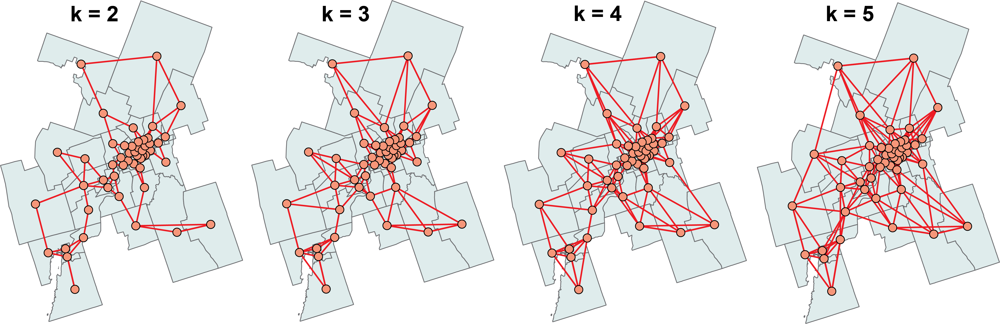
2.3 Autocorrélation spatiale globale
Dans le cadre de cette section, nous présentons uniquement les mesures d’autocorrélation spatiale globale les plus utilisées, à savoir le I de Moran pour évaluer l’autocorrélation spatiale d’une variable continue (section 2.3.1), les statistiques de comptage de jointure (Join Count Statistics) pour une variable binaire ou catégorielle (section 2.3.2) et l’indice de Lee pour évaluer l’autocorrélation spatiale de deux variables continues (section 2.3.3).
2.3.1 Statistique du I de Moran
2.3.1.1 Formulation du I de Moran
Pour évaluer le degré d’autocorrélation spatiale d’une variable continue, les deux principales statistiques utilisées sont le I de Moran (1950) et le c de Geary (1954). Puisqu’elles renvoient une seule valeur pour la variable continue de la couche géographique étudiée, elles sont qualifiées de mesures globales de l’autocorrélation spatiale, par opposition aux mesures locales qui renvoient une valeur par entité spatiale (section 2.4).
Nous présentons ici uniquement le I de Moran pour deux raisons principales. Premièrement, étant basée sur la covariance, son interprétation est bien plus facile que celle du c de Geary (basé sur la variance des écarts), c’est-à-dire qu’elle est très similaire au bien connu coefficient de corrélation de Pearson (Apparicio et Gelb 2022). Deuxièmement, elle constitue la mesure la plus utilisée. Le I de Moran s’écrit :
\[ I = \frac{n}{\Sigma_{i=1}^n \Sigma_{j=1}^n w_{ij}} \frac{\Sigma_{i=1}^n \Sigma_{j=1}^n w_{ij}(x_i-\bar{x})(x_j-\bar{x})}{\Sigma_{i=1}^n (x_i-\bar{x})^2} \text{ avec :} \tag{2.10}\]
n, le nombre d’entités spatiales dans la couche géographique;
\(w_{ij}\), la valeur de la pondération spatiale entre les entités spatiales \(i\) et \(j\);
\(x_i\) et \(x_j\), les valeurs de la variable continue pour les entités spatiales \(i\) et \(j\);
\(\bar{x}\), la valeur moyenne de la variable \(X\) à l’étude.
Standardisation de la matrice de pondération et I de Moran
Nous avons vu que si la matrice de pondération spatiale est standardisée en ligne (section 2.2.3), alors chaque ligne de la matrice vaut 1 et la somme de l’ensemble des valeurs de la matrice est égale au nombre d’entités spatiales (\(n\)). Or, dans l’équation 2.10), \(\Sigma_{i=1}^n \Sigma_{j=1}^n w_{ij}\) représente la somme des pondérations de la matrice, soit \(n\) si elles sont standardisées en ligne. Puisque \(\frac{n}{n}=1\), alors l’équation du I de Moran est simplifiée comme suit :
\[ I = \frac{\Sigma_{i=1}^n \Sigma_{j=1}^n w_{ij}(x_i-\bar{x})(x_j-\bar{x})}{\Sigma_{i=1}^n (x_i-\bar{x})^2} \tag{2.11}\]
Comme évoqué dans la section 2.2.3, cela démontre l’intérêt de la standardisation : la comparaison des valeurs du I de Moran obtenues avec différentes matrices de contiguïté afin de sélectionner (éventuellement) celle avec laquelle la dépendance spatiale est la plus forte.
2.3.1.2 Interprétation du I de Moran
Avec une matrice standardisée, la statistique du I de Moran varie de -1 à 1 et s’interprète de la façon suivante :
quand \(I > 0\), l’autocorrélation est positive, c’est-à-dire que les entités géographiques ont tendance à se ressembler d’autant plus qu’elles sont voisines ou proches;
quand \(I = 0\), l’autocorrélation est nulle, c’est-à-dire que la contiguïté ou la proximité spatiale des zones ne jouent aucun rôle;
quand \(I < 0\), l’autocorrélation est négative, c’est-à-dire que les entités géographiques ont tendance à être dissemblables d’autant plus qu’elles sont voisines ou proches.
Les limites de -1 et 1 sont les maximums théoriques du I de Moran. Dans la pratique, elles sont limitées par la matrice spatiale utilisée dans le calcul. En effet, selon la matrice spatiale, le maximum du I de Moran peut être inférieur à 1, et son minimum supérieur à -1. Le calcul de ces bornes propres à chaque matrice spatiale peut se faire en utilisant les maximums et minimums des valeurs propres de \(\frac{W+W^T}{2}\), quand la matrice spatiale est standardisée.
À titre d’exemple, nous calculons ci-dessous les maximums et minimums possibles pour une matrice de contiguïté selon le partage d’un nœud (Queen) de nos secteurs de recensement.
# Matrice de contiguïté selon le partage d'un nœud (Queen)
Queen <- poly2nb(SR, queen = TRUE)
WQueen <- nb2listw(Queen, style = 'W')
QueenMat <- listw2mat(WQueen)
values <- range(eigen((QueenMat + t(QueenMat))/2)$values)
print(round(values,2))[1] -0.74 1.02Il apparaît ainsi que pour la matrice matrice de contiguïté selon le partage d’un nœud (Queen), quelle soit la variable analysée, la valeur de I de Moran ne pourra pas dépasser les limites -0,74 et 1,02.
2.3.1.3 Significativité du I de Moran
Comme pour le coefficient de corrélation calculé entre deux variables, il est possible de tester la significativité de la valeur du I de Moran obtenue. Sans que nous détaillions les calculs de significativité, notez qu’il existe trois manières de tester la significativité :
selon l’hypothèse de la normalité;
selon l’hypothèse de la randomisation;
selon des permutations Monte-Carlo (habituellement avec 999 échantillons).
Comment calculer les trois tests de significativité du I de Moran?
Pour une description détaillée du calcul des trois tests, consultez l’ouvrage de Jean Dubé et Diego Legros (2014).
2.3.1.4 Mise en œuvre dans R
Calcul du I de Moran dans R
Pour illustrer le calcul de I de Moran dans R, nous utilisons une couche des aires de diffusion (AD) de la ville de Sherbrooke. Les étapes suivantes sont réalisées :
- Construire une panoplie de matrices de pondération spatiale selon la contiguïté, la connectivité, la proximité et le critère des plus proches voisins.
- Comparer les valeurs de significativité (p) pour une variable continue (
HabKm2). - Pour cette même variable, trouver avec quelle matrice la valeur du I de Moran est la plus forte.
- Comparer les valeurs du I de Moran calculées sur plusieurs variables.
2.3.1.4.1 Étape 1. Construction des matrices de pondération spatiale
library(sf)
library(spdep)
## Importation de la couche des aires de diffusion de la ville de Sherbrooke
AD.DR <- st_read(dsn = "data/chap02/Recen2021Sherbrooke.gpkg",
layer = "DR_SherbADDonnees2021", quiet=TRUE)
## Matrices de contiguïté
##############################################
## Partage d'un nœud (Queen)
Queen <- poly2nb(AD.DR, queen=TRUE)
W.Queen <- nb2listw(Queen, zero.policy=TRUE, style = "W")
## Partage d'un segment (Rook)
Rook <- poly2nb(AD.DR, queen=FALSE)
W.Rook <- nb2listw(Rook, zero.policy=TRUE, style = "W")
## Partage d'un segment (Rook) et ordres d'adjacence de 2 à 5
Rook2 <- nblag_cumul(nblag(Rook, 2))
Rook3 <- nblag_cumul(nblag(Rook, 3))
Rook4 <- nblag_cumul(nblag(Rook, 4))
Rook5 <- nblag_cumul(nblag(Rook, 5))
W.Rook2 <- nb2listw(Rook2, zero.policy=TRUE, style = "W")
W.Rook3 <- nb2listw(Rook3, zero.policy=TRUE, style = "W")
W.Rook4 <- nb2listw(Rook4, zero.policy=TRUE, style = "W")
W.Rook5 <- nb2listw(Rook5, zero.policy=TRUE, style = "W")
## Matrice de connectivité
##############################################
## Matrice binaire avec un seuil de 2500 mètres
Connect2500m <- dnearneigh(st_centroid(AD.DR), d1 = 0, d2 = 2500)
W.Connect2500m <- nb2listw(Connect2500m, zero.policy=TRUE, style = "W")
## Matrices de proximité
##############################################
## Coordonnées géographiques et matrice de distance
coords <- st_coordinates(st_centroid(AD.DR))
distances <- as.matrix(dist(coords, method = "euclidean"))
diag(distances) <- 0
## Matrices inverse de la distance et inverse de la distance au carré
InvDistances <- ifelse(distances!=0, 1/distances, distances)
InvDistances2 <- ifelse(distances!=0, 1/distances^2, distances)
## Matrices de pondération spatiale standardisées en ligne
W.InvDistances <- mat2listw(InvDistances, style="W")
W.InvDistances2 <- mat2listw(InvDistances2, style="W")
## Création de différentes matrices avec différents seuils
InvDistances.2500m <- ifelse(distances<=2500 & distances!=0, 1/distances, 0)
InvDistances.5000m <- ifelse(distances<=5000 & distances!=0, 1/distances, 0)
InvDistances2.2500m <- ifelse(distances<=2500 & distances!=0, 1/distances^2, 0)
InvDistances2.5000m <- ifelse(distances<=5000 & distances!=0, 1/distances^2, 0)
W.InvDistances_2500 <- mat2listw(InvDistances.2500m, style="W")
W.InvDistances_5000 <- mat2listw(InvDistances.5000m, style="W")
W.InvDistances2_2500 <- mat2listw(InvDistances2.2500m, style="W")
W.InvDistances2_5000 <- mat2listw(InvDistances2.5000m, style="W")
## Matrice de distance réduite standardisée
k1 <- knn2nb(knearneigh(coords))
plusprochevoisin.max <- max(unlist(nbdists(k1,coords)))
Voisins.DistMax <- dnearneigh(coords, 0, plusprochevoisin.max)
distances <- nbdists(Voisins.DistMax, coords)
InvDistances <- lapply(distances, function(x) (1/x))
InvDistances2 <- lapply(distances, function(x) (1/x^2))
W_InvDistancesReduite <- nb2listw(Voisins.DistMax, glist = InvDistances, style = "W")
W_InvDistances2Reduite <- nb2listw(Voisins.DistMax, glist = InvDistances2, style = "W")
## Matrice selon le critère des plus proches voisins
#####################################################
## Matrices des plus proches voisins de 2 à 5
k2 <- knn2nb(knearneigh(coords, k = 2))
k3 <- knn2nb(knearneigh(coords, k = 3))
k4 <- knn2nb(knearneigh(coords, k = 4))
k5 <- knn2nb(knearneigh(coords, k = 5))
## Matrices de pondération spatiale standardisées en ligne
W.k2 <- nb2listw(k2, zero.policy=FALSE, style = "W")
W.k3 <- nb2listw(k3, zero.policy=FALSE, style = "W")
W.k4 <- nb2listw(k4, zero.policy=FALSE, style = "W")
W.k5 <- nb2listw(k5, zero.policy=FALSE, style = "W")2.3.1.4.2 Étape 2. Calcul du I de Moran et des trois tests de significativité
Calculons la statistique du I de Moran sur la variable continue cartographiée à la figure 2.12.
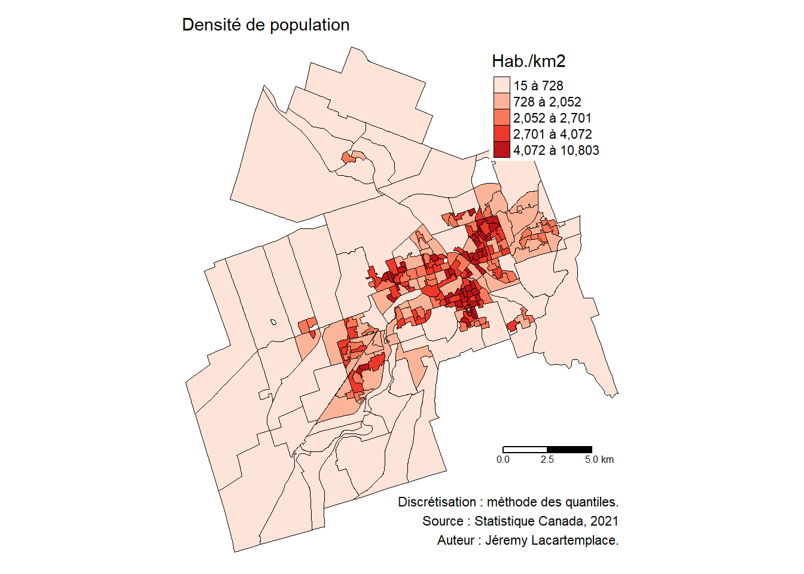
Les fonctions moran.test et moran.mc du package spdep permettent de calculer le I de Moran selon les trois façons de tester la significativité :
-
selon l’hypothèse de la normalité avec le paramètre
randomisation = FALSEmoran.test(ObjetSf$Variable, listw=MatriceW, zero.policy=TRUE, randomisation = FALSE)
-
selon l’hypothèse de la randomisation avec le paramètre
randomisation = TRUEmoran.test(ObjetSf$Variable, listw=MatriceW, zero.policy=TRUE, randomisation = TRUE)
-
selon des permutations Monte-Carlo (ci-dessus avec 999 permutations)
moran.mc(ObjetSf$Variable, listw=MatriceW, zero.policy=TRUE, nsim=999)
Bien entendu, dans les sorties des trois méthodes, la valeur du I de Moran est la même, contrairement à la valeur de p qui peut varier.
moran.test(AD.DR$HabKm2, # nom de l'objet sf et de la variable continue
listw=W.Queen, # nom de la matrice de pondération spatiale
zero.policy=TRUE,
randomisation = FALSE) # significativité selon l’hypothèse de la normalité
Moran I test under normality
data: AD.DR$HabKm2
weights: W.Queen
Moran I statistic standard deviate = 11.724, p-value < 2.2e-16
alternative hypothesis: greater
sample estimates:
Moran I statistic Expectation Variance
0.433714579 -0.004032258 0.001394035 moran.test(AD.DR$HabKm2, # nom de l'objet sf et de la variable continue
listw=W.Queen, # nom de la matrice de pondération spatiale
zero.policy=TRUE,
randomisation = TRUE) # significativité selon l’hypothèse de la randomisation
Moran I test under randomisation
data: AD.DR$HabKm2
weights: W.Queen
Moran I statistic standard deviate = 11.761, p-value < 2.2e-16
alternative hypothesis: greater
sample estimates:
Moran I statistic Expectation Variance
0.433714579 -0.004032258 0.001385364 moran.mc(AD.DR$HabKm2, # nom de l'objet sf et de la variable continue
listw=W.Queen, # nom de la matrice de pondération spatiale
zero.policy=TRUE,
nsim=999) # 999 permutations
Monte-Carlo simulation of Moran I
data: AD.DR$HabKm2
weights: W.Queen
number of simulations + 1: 1000
statistic = 0.43371, observed rank = 1000, p-value = 0.001
alternative hypothesis: greaterNous calculons la mesure du I de Moran sur la variable continue cartographiée à la figure 2.13.
La statistique du I de Moran (I = 0,43, p < 0,001) indique que la variable densité de population a une forte autocorrélation spatiale positive (figure 2.13), avec des valeurs fortes dans les aires de diffusion contiguës dans la partie centrale de la ville et des valeurs faibles dans les aires de diffusion contiguës dans les secteurs périphériques (figure 2.12).
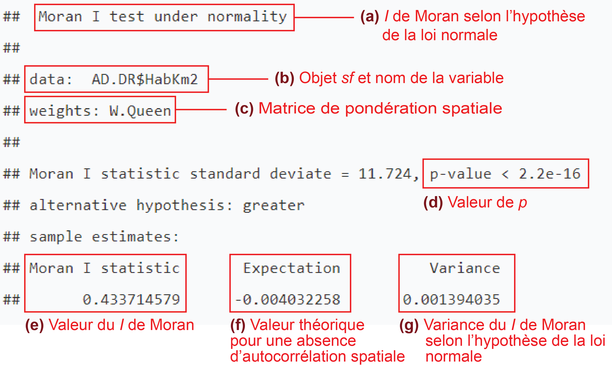
2.3.1.4.3 Étape 3. Identification de la plus forte autocorrélation spatiale selon les différentes matrices
La syntaxe ci-dessous permet de calculer la statistique du I de Moran avec plusieurs matrices de pondération spatiale.
## Création d'un vecteur pour les noms des matrices
VecteurMatrices <- c("W.Queen", "W.Rook", "W.Rook2", "W.Rook3", "W.Rook4", "W.Rook5",
"W.Connect2500m",
"W.InvDistances", "W.InvDistances2",
"W_InvDistancesReduite", "W_InvDistances2Reduite",
"W.InvDistances_2500", "W.InvDistances_5000",
"W.InvDistances2_2500","W.InvDistances2_5000",
"W.k2", "W.k3", "W.k4", "W.k5")
## Création d'une liste pour toutes les matrices
ListeMatrices <- list(W.Queen, W.Rook, W.Rook2, W.Rook3, W.Rook4, W.Rook5,
W.Connect2500m,
W.InvDistances, W.InvDistances2,
W_InvDistancesReduite, W_InvDistances2Reduite,
W.InvDistances_2500, W.InvDistances2_2500,
W.InvDistances2_2500, W.InvDistances2_5000,
W.k2, W.k3, W.k4, W.k5)
## Vecteur pour le I de Moran et la valeur de p
MoranI <- c()
Pvalue <- c()
i<-0
## Boucle pour calculer le I de Moran avec la liste des matrices
for (e in ListeMatrices){
i<-i+1
Test <-moran.mc(AD.DR$HabKm2,
listw=e,
zero.policy=TRUE,
nsim=999)
MoranI[i]<-Test$statistic
Pvalue[i] <- Test$p.value
}
# Création d'un DataFrame avec les valeurs du I de Moran et de p
MoranData1 <- data.frame(Matrices=VecteurMatrices,
MoranIs=MoranI,
Pvalues=Pvalue)
print(MoranData1) Matrices MoranIs Pvalues
1 W.Queen 0.43371458 0.001
2 W.Rook 0.44970946 0.001
3 W.Rook2 0.32509097 0.001
4 W.Rook3 0.21527754 0.001
5 W.Rook4 0.12614476 0.001
6 W.Rook5 0.07129756 0.001
7 W.Connect2500m 0.25583250 0.001
8 W.InvDistances 0.10632882 0.001
9 W.InvDistances2 0.27216034 0.001
10 W_InvDistancesReduite 0.28566705 0.001
11 W_InvDistances2Reduite 0.38836327 0.001
12 W.InvDistances_2500 0.32115230 0.001
13 W.InvDistances_5000 0.40350492 0.001
14 W.InvDistances2_2500 0.40350492 0.001
15 W.InvDistances2_5000 0.34988630 0.001
16 W.k2 0.51070049 0.001
17 W.k3 0.44458619 0.001
18 W.k4 0.44800959 0.001
19 W.k5 0.43874109 0.001La lecture détaillée du tableau 2.3 permet d’avancer plusieurs constats intéressants :
D’emblée, signalons que toutes les valeurs sont positives et significatives, témoignant d’une autocorrélation spatiale positive.
Concernant les matrices de contiguïté, la dépendance spatiale est plus forte selon le partage d’un segment que d’un nœud (0,4497 contre 0,4337). Par conséquent, si nous devons choisir une matrice de contiguïté, il serait préférable d’utiliser celle définie selon le partage d’une chaîne (Rook).
Sans surprise, plus nous ajoutons des ordres d’adjacence, plus la valeur de la statistique du I de Moran est faible, passant de 0,3251 à 0,0713 du deuxième au cinquième ordre.
La valeur du I de Moran avec une matrice de connectivité avec 2500 mètres est de 0,2558. Elle est plus faible que celles de l’inverse de la distance et l’inverse de la distance au carré, avec le même seuil de 2500 mètres (0,3212 et 0,4035).
Concernant les matrices de proximité, la méthode de l’inverse de la distance au carré, qui accorde un poids plus important aux entités spatiales très proches (comparativement à l’inverse de la distance), renvoie des valeurs toujours plus élevées, et ce, que la matrice soit complète ou réduite. Aussi, les matrices de distance réduites présentent toujours des valeurs plus fortes que celles complètes.
Concernant les matrices selon le critère des plus proches voisins, l’autocorrélation spatiale diminue légèrement de k = 2 à k = 5. D’ailleurs, la valeur la plus forte est pour deux voisins (I = 0,5107). Toutefois, retenir uniquement deux voisins est discutable puisque les AD sont très majoritairement contiguës à plus de deux autres AD (sur les 249 AD, seuls 9 sont contiguës à deux autres AD selon le partage d’un segment). Pour le vérifier, tapez
summary(W.Rook)et analysez le tableau sous la ligneLink number distribution.
| Nom | Description | I de Moran | p (999 permutations) |
|---|---|---|---|
| Matrices de contiguïté | |||
| W.Queen | Partage d’un nœud | 0,4337 | 0,001 |
| W.Rook | Partage d’un segment | 0,4497 | 0,001 |
| Matrices de contiguïté selon le partage d’un segment et ordre d'adjacence | |||
| W.Rook2 | Ordre 2 | 0,3251 | 0,001 |
| W.Rook3 | Ordre 3 | 0,2153 | 0,001 |
| W.Rook4 | Ordre 4 | 0,1261 | 0,001 |
| W.Rook5 | Ordre 5 | 0,0713 | 0,001 |
| Matrices de connectivité | |||
| W.Connect2500m | 2500 mètres | 0,2558 | 0,001 |
| Matrices de distance (complètes) | |||
| W.InvDistances | Inverse de la distance | 0,1063 | 0,001 |
| W.InvDistances2 | Inverse de la distance au carré | 0,2722 | 0,001 |
| Matrices de distance (réduites) | |||
| W_InvDistancesReduite | Inverse de la distance | 0,2857 | 0,001 |
| W_InvDistances2Reduite | Inverse de la distance au carré | 0,3884 | 0,001 |
| Matrices de distance avec un seuil maximal | |||
| W.InvDistances_2500 | Inverse de la distance (2500 mètres) | 0,3212 | 0,001 |
| W.InvDistances_5000 | Inverse de la distance (5000 mètres) | 0,4035 | 0,001 |
| W.InvDistances2_2500 | Inverse de la distance au carré (2500 mètres) | 0,4035 | 0,001 |
| W.InvDistances2_5000 | Inverse de la distance au carré (5000 mètres) | 0,3499 | 0,001 |
| Matrices selon le critère des plus proches voisins | |||
| W.k2 | 2 voisins | 0,5107 | 0,001 |
| W.k3 | 3 voisins | 0,4446 | 0,001 |
| W.k4 | 4 voisins | 0,4480 | 0,001 |
| W.k5 | 5 voisins | 0,4387 | 0,001 |
Quelle est la matrice avec laquelle la dépendance spatiale de la variable est la plus forte?
Pour la trouver, nous construisons un graphique avec les valeurs du I de Moran triées par ordre décroissant. La valeur la plus forte est obtenue avec la matrice selon les deux plus proches voisins, suivie de la matrice Rook. Quoi qu’il en soit, il serait plus judicieux de privilégier la matrice de contiguïté selon le partage d’un segment comme expliqué plus haut.
library(ggplot2)
ggplot(data=MoranData1, aes(x=reorder(Matrices,MoranIs), y=MoranIs)) +
geom_segment( aes(x=reorder(Matrices,MoranIs),
xend=reorder(Matrices,MoranIs),
y=0, yend=MoranIs)) +
geom_point( size=4,fill="red",shape=21)+
xlab("Matrice de pondération spatiale") +
ylab("I de Moran")+
coord_flip()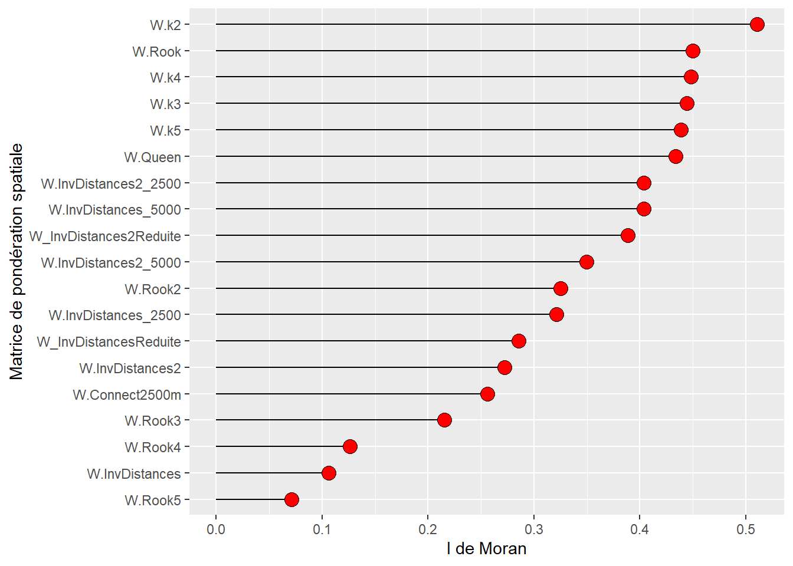
2.3.1.4.4 Étape 4. Comparaison des valeurs du I de Moran pour plusieurs variables avec la même matrice
La syntaxe ci-dessous permet de calculer la statistique du I de Moran pour plusieurs variables (figure 2.15) avec la même matrice de pondération spatiale (ici, matrice de contiguïté selon le partage d’un segment).
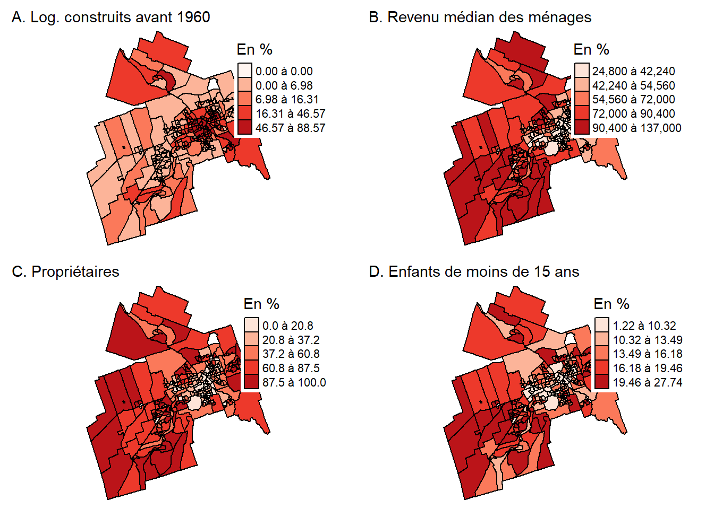
## Vecteur pour les variables à analyser
listeVars <- c("PctLog1960_Av", "RevMedMenage" , "PctProprieta", "PctPop0_14")
## Vecteur pour le I de Moran et la valeur de p
MoranI <- c()
VarName <- c()
Pvalue <- c()
i<-0
## Boucle pour calculer le I de Moran pour les différentes variables
for (e in listeVars){
i<-i+1
Test <- moran.mc(AD.DR[[e]],
listw=W.Rook,
zero.policy=TRUE,
nsim=999)
MoranI[i]<-round(Test$statistic,4)
VarName[i]<-e
Pvalue[i] <- Test$p.value
}
# Création d'un DataFrame avec les valeurs du I de Moran et de p
MoranData2 <- data.frame(Variable=listeVars,
MoranIs=MoranI,
Pvalues=Pvalue)
print(MoranData2) Variable MoranIs Pvalues
1 PctLog1960_Av 0.7071 0.001
2 RevMedMenage 0.6168 0.001
3 PctProprieta 0.6028 0.001
4 PctPop0_14 0.4474 0.001De nouveau, en quelques lignes de code, il est aisé de réaliser un graphique pour comparer les valeurs du I de Moran pour les différentes variables (figure 2.16).
library(ggplot2)
ggplot(data=MoranData2, aes(x=reorder(Variable,MoranIs), y=MoranIs)) +
geom_segment( aes(x=reorder(Variable,MoranIs), xend=reorder(Variable,MoranIs), y=0, yend=MoranIs)) +
geom_point( size=4,fill="red",shape=21)+
xlab("Variable continue") + ylab("I de Moran")+
coord_flip()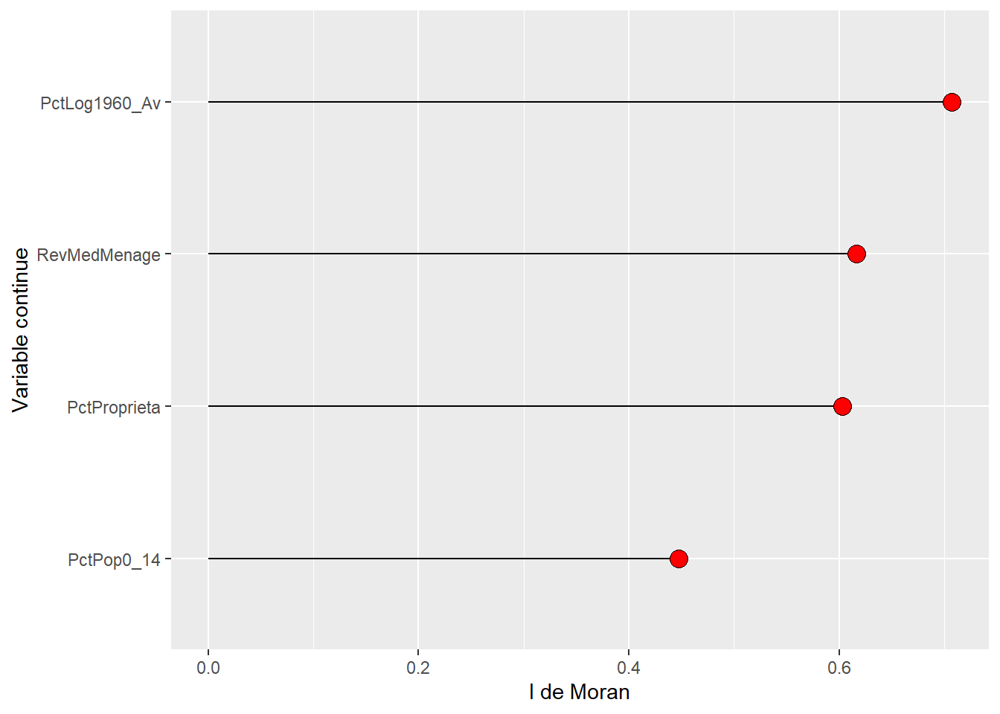
2.3.2 Statistiques de comptage de jointure (Join Count Statistics)
Pour évaluer l’autocorrélation spatiale d’une variable qualitative dichotomique (binaire) ou polychotomique (catégorielle), il convient d’utiliser les Join Count Statistics, qui peuvent être traduits par statistiques de comptage de jointure. Ces tests permettent de répondre à la question suivante : est-ce que le voisinage ou la proximité des entités spatiales augmente significativement les chances qu’elles partagent la même valeur (modalité) par rapport à ce que le hasard produirait (Cliff et Ord 1981)?
Autocorrélation spatiale sur une variable qualitative
Ces statistiques permettent ainsi de vérifier si la distribution des modalités d’une variable binaire ou nominale est dispersée aléatoirement dans l’espace d’étude ou si elle tend à se regrouper spatialement. Voici quelques exemples applicatifs :
Variable binaire (oui/non; absence/présence d’un phénomène) avec habituellement des valeurs de 0 ou 1. Dans une ville, les parcelles commerciales sont-elles distribuées aléatoirement ou tendent-elle à se regrouper?
Variable qualitative nominale. À la suite d’une élection dans un pays donné, il s’agit de vérifier si les districts électoraux adjacents ont significativement été remportés par des personnes candidates du même parti. Autre exemple, la répartition d’espèces d’arbres sur un territoire donné est-elle aléatoire ou favorise-t-elle la proximité entre certaines espèces?
2.3.2.1 Formulation des statistiques de comptage de jointure
2.3.2.1.1 Application à une variable binaire
Pour décrire le fonctionnement de ces tests, nous utilisons deux situations fictives avec toutes deux 36 entités spatiales, dont 9 avec la valeur de 1 (noir, soit B par convention) et 27 avec la valeur de 0 (blanc, soit W par convention) (figure 2.17). La relation d’adjacence entre les entités spatiales est ici mesurée à partir d’une matrice de contiguïté selon le partage d’un segment qui est représentée avec un graphe à la figure 2.17 (b).

2.3.2.1.2 Comptage des jointures
Le comptage des entités voisines partageant la même valeur (BB et WW, soit une autocorrélation spatiale positive) et inversement (WB, soit une autocorrélation spatiale négative) est réalisé comme suit :
-
Le nombre de voisins partageant la valeur de 1 (autocorrélation positive) est obtenu avec l’équation 2.12. Lorsque deux entités ne sont pas adjacentes, alors \(w_{ij}=0\) et donc \(w_{ij}x_ix_j = 0\). Par contre, lorsqu’elles sont voisines, trois cas de figure sont possibles :
- Toutes deux ont la valeur de 1, alors \(x_ix_j=1\times1 = 1\).
- Toutes deux ont la valeur de 0, alors \(x_ix_j=0\times0 = 0\).
- Elles ont des valeurs différentes, alors \(x_ix_j=1\times0 = 0\).
\[ O_{BB} = \frac{1}{2} \Sigma_{i=1}^n \Sigma_{j=1}^n w_{ij} x_i x_j \text{ avec :} \tag{2.12}\]
n étant le nombre d’entités spatiales dans la couche géographique; \(w_{ij}\) étant la valeur de la matrice de contiguïté non standardisée entre \(i\) et \(j\) (1 quand elles sont voisines, sinon 0), \(x_i\) et \(x_j\) étant les valeurs de la variable binaire (0 ou 1) pour les entités spatiales \(i\) et \(j\).
-
Le nombre de voisins partageant la valeur de 0 (autocorrélation positive) est obtenu avec l’équation 2.13 avec les cas suivants lorsque les deux entités sont voisines :
- Toutes deux avec la valeur de 1, alors \((1-x_i) (1-x_j)=(1-1)\times(1-1) = 0 \times 0 = 0\).
- Toutes deux avec la valeur de 0, alors \((1-x_i) (1-x_j)=(1-0)\times(1-0) = 1 \times 1 = 1\).
- Avec des valeurs différentes, alors \((1-x_i) (1-x_j)=(1-1)\times(1-0) = 0 \times 1 = 0\).
\[ O_{WW} = \frac{1}{2} \Sigma_{i=1}^n \Sigma_{j=1}^n w_{ij} (1-x_i) (1-x_j) \tag{2.13}\]
-
Le nombre de voisins ne partageant pas la même valeur (autocorrélation négative) est obtenu avec l’équation 2.14 avec les cas suivants lorsque les deux entités sont voisines :
- Toutes deux avec la valeur de 1, alors \((x_i-x_j)^2=(1-1)^2 = 0\).
- Toutes deux avec la valeur de 0, alors \((x_i-x_j)^2=(0-0)^2 = 0\).
- Avec des valeurs différentes, alors \((x_i-x_j)^2=(1-0)^2 = 1\).
\[ O_{BW} = \frac{1}{2} \Sigma_{i=1}^n \Sigma_{j=1}^n w_{ij} \left(x_i-x_j \right)^2 \tag{2.14}\]
Note
Pour les trois équations ci-dessus, les sommes sont divisées par 2 puisque les mêmes résultats sont obtenus entre les paires (\(i,j\)) et (\(j,i\)). La somme des voisins partageant les mêmes valeurs (\(O_{BB}\) et \(O_{WW}\)) et ayant des valeurs différentes (\(O_{BW}\)) est égale à la somme de la matrice de contiguïté (\(S_0\)) divisée par deux (équation 2.15).
\[ O_{BB} + O_{WW} + O_{BW} = \frac{1}{2}S_0= \frac{1}{2} \Sigma_{i=1}^n \Sigma_{j=1}^n w_{ij} \tag{2.15}\]
Les résultats des comptages pour les situations A et B (figure 2.17) sont présentés au tableau 2.4. Ils démontrent clairement que les regroupements des valeurs de 0 et 1 sont bien plus importants pour la situation A (BB = 12 et WW = 42) que celle de B (BB = 1 et WW = 33). Reste à vérifier si ces résultats sont significatifs, c’est-à-dire s’ils diffèrent de ce que le hasard produirait.
| Situation | BB | WW | WB | Somme |
|---|---|---|---|---|
| A (forte autocorrélation spatiale) | 12 | 42 | 6 | 60 |
| B (absence autocorrélation spatiale) | 1 | 33 | 26 | 60 |
2.3.2.1.3 Tests statistiques
Il existe deux approches d’inférence pour déterminer si des observations voisines tendent à produire certaines paires de catégories (BB, WW ou WB) plus souvent que le hasard : les tests reposant sur la loi binomiale et les tests par permutations. Notez que la seconde approche est habituellement privilégiée.
Tests selon la loi binomiale
Ces tests permettent d’obtenir les valeurs attendues des paires BB, WW et WB pour une absence d’autocorrélation spatiale, puis des valeurs de Z (équation 2.16) et de p.
\[ Z_{WW} = \frac{O[WW] - E[WW]}{\sqrt{\text{Var}[WW]}} \\ Z_{BB} = \frac{O[BB] - E[BB]}{\sqrt{\text{Var}[BB]}} \\ Z_{WB} = \frac{O[WB] - E[WB]}{\sqrt{\text{Var}[WB]}}\text{ avec :} \tag{2.16}\]
\(O[WW]\), \(O[BB]\) et \(O[WB]\) étant les nombres de paires observées; \(E[WW]\), \(E[BB]\) et \(E[WB]\) étant les nombres de paires attendues et \(\text{Var}[WW]\), \(\text{Var}[BB]\) et \(\text{Var}[WB]\) leurs variances selon la loi binomiale pour une distribution aléatoire. Pour une description détaillée des formules des valeurs attendues et des variances selon les deux types d’échantillons (indépendant et dépendant) et selon le type de matrice de pondération spatiale (standardisée ou non), consultez l’ouvrage de Wong et Lee (2005).
Aussi, le calcul des valeurs de Z repose sur deux cas de figure :
Échantillon dépendant (non free Sampling). Le nombre de valeurs possibles de chaque catégorie est défini en amont et ne peut pas changer. Prenons l’exemple suivant : nous souhaitons vérifier si deux restaurants voisins ont tendance à avoir une licence d’alcool (BB) ou non (WW). Si le nombre de licences d’alcool est réglementé, alors la probabilité d’en avoir une dépend du nombre de licences en circulation (échantillon dépendant).
Échantillon indépendant (free Sampling). Pour chaque entité spatiale, la probabilité d’avoir une catégorie est indépendante du nombre d’observations. En d’autres termes, il n’y a pas un nombre défini d’observations pour chaque catégorie (W ou B) qui sont réparties entre les entités spatiales (échantillon indépendant).
Bien distinguer ces deux configurations est essentiel, car elles affectent directement les valeurs des variances et par ricochet celles de Z et de p (voir les tableaux tableau 2.5 et tableau 2.4). Avec un test basé sur un échantillon indépendant pour la situation A, nous concluons que les valeurs de 1 et de 0 (BB et WW) ne sont pas distribuées aléatoirement puisque p < 0,05, ce qui traduit une autocorrélation spatiale. Par contre, pour la situation B, toutes les valeurs de p sont supérieures à 0,05, ce qui ne nous permet pas de rejeter l’hypothèse nulle d’une distribution aléatoire selon la loi binomiale.
| O[BB] | E[BB] | Var[BB] | Z | p | |
|---|---|---|---|---|---|
| A (échantillon dépendant) | 42 | 33,43 | 3,73 | 4,439 | 0,000 |
| A (échantillon indépendant) | 42 | 33,75 | 45,98 | 1,217 | 0,112 |
| B (échantillon dépendant) | 33 | 33,43 | 3,73 | -0,222 | 0,588 |
| B (échantillon indépendant) | 33 | 33,75 | 45,98 | -0,111 | 0,544 |
| Situation et test | O[WW] | E[WW] | Var[WW] | Z | p |
|---|---|---|---|---|---|
| A (échantillon dépendant) | 12 | 3,43 | 2,09 | 5,922 | 0,000 |
| B (échantillon indépendant) | 12 | 3,75 | 6,98 | 3,122 | 0,001 |
| B (échantillon dépendant) | 1 | 3,43 | 2,09 | -1,678 | 0,953 |
| B (échantillon indépendant) | 1 | 3,75 | 6,98 | -1,041 | 0,851 |
Tests par permutations
Cette seconde approche d’inférence est très simple et consiste à :
- Mélanger les observations du jeu de données de nombreuses fois (habituellement 999).
- Pour chaque permutation, compter les jointures BB, WW et WB.
- Estimer la pseudo valeur de p à partir de l’équation 2.17. Cette valeur peut être interprétée comme la probabilité que le hasard génère plus souvent une paire (BB, WW ou WB) que ce qui est observé avec le jeu de données initial.
\[ \text{Pseudo valeur de } p = (M+1)/ (R+1) \text{ avec :} \tag{2.17}\]
\(M\) étant le nombre de fois que le comptage de jointures (BB ou WW par exemple) est égal ou supérieur à la valeur de référence (\(O_{BB}\) ou \(O_{WW}\) par exemple) et \(R\) étant le nombre de permutations (habituellement 999).
En guise d’exemple, nous réalisons 999 permutations des valeurs de la situation A qui comprend 12 paires de BB, 42 de WW et 6 de WB. Les comptages de BB et WW pour ces 999 permutations sont représentés à la figure 2.18. Nous constatons qu’elles sont toujours inférieures aux valeurs de référence (BB = 12 et WW = 42; lignes bleues). Par conséquent, la pseudo valeur de p est égale à \((0+1)/(999+1)=\text{0,001}\). Cela signifie que nous ne pouvons pas rejeter l’hypothèse nulle stipulant que les distributions des paires BB et WW sont dues au hasard.
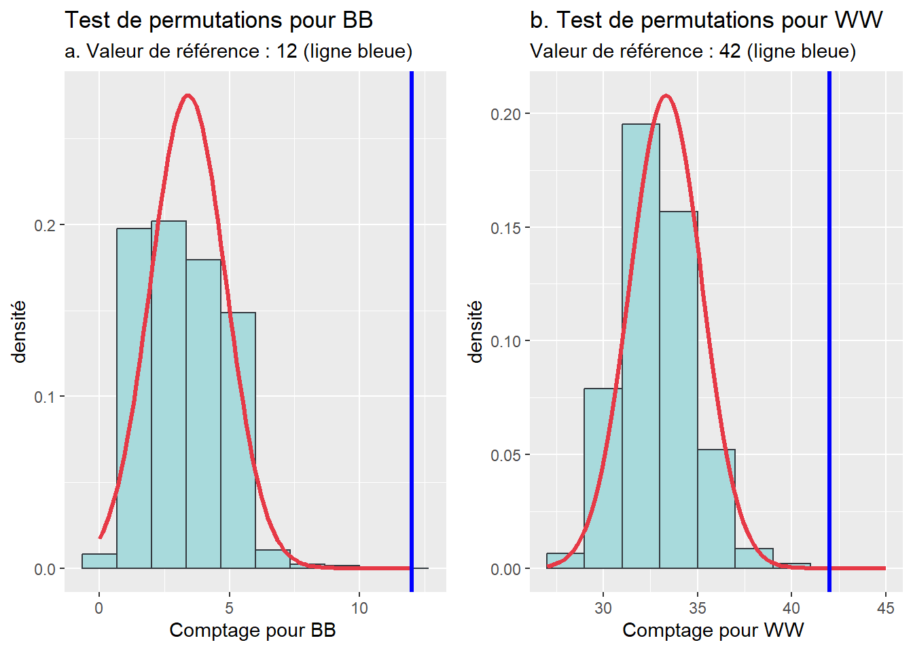
Effectuons la même démarche pour la situation B avec une seule paire de BB et 33 paires de WW (figure 2.19) :
pour BB, il y a 984 permutations qui ont une valeur supérieure ou égale à 1. La pseudo valeur de p est égale à \((984+1)/(999+1)=\text{0,985}\).
pour WW, il y a 653 permutations qui ont une valeur supérieure ou égale à 1. La pseudo valeur de p est égale à \((653+1)/(999+1)=\text{0,653}\).
Par conséquent, nous validons l’hypothèse nulle stipulant que les distributions des paires BB et WW sont dues au hasard pour la situation B.

Comment réaliser une permutation aléatoire des valeurs d’un vecteur dans R?
Dans R, la fonction sample(x) permet de permuter les valeurs d’un vecteur.
Importance de la matrice de voisinage pour le Join count Test
Quelle que soit la méthode utilisée pour effectuer le Join count Test, le test est sensible à la définition de la matrice de voisinage, définie selon le partage d’un segment ou d’un nœud (Queen ou Rook). Elle affecte directement le nombre de paires observées et attendues et donc le niveau de significativité de l’autocorrélation spatiale.
2.3.2.2 Mise en œuvre dans R
Calcul des statistiques de comptage de jointure dans R
Pour illustrer le calcul des statistiques de comptage de jointure (Join Count Statistics) dans R, nous utilisons une couche des aires de diffusion (AD) de la ville de Sherbrooke afin de répondre à la question suivante : les AD avec une majorité de locataires et celles avec une majorité de propriétaires sont-elles significativement voisines les unes des autres (autocorrélation spatiale positive) à Sherbrooke?
Dans le code ci-dessous, nous importons la couche géographique, créons une variable binaire indiquant si l’aire de diffusion a ou non une majorité de locataires et finalement, cartographions cette variable. Sans surprise, les AD avec une majorité de locataires sont concentrées dans la partie centrale de la ville (figure 2.20).
## Chargement des données des aires de diffusion de la ville de Sherbrooke
ADSherb <- st_read("data/chap02/Recen2021Sherbrooke.gpkg",
layer="DR_SherbADDonnees2021",
quiet=TRUE)
## Création de la variable binaire
ADSherb$maj_locataires <- ifelse(ADSherb$Locataire > ADSherb$Proprietaire, 1, 0)
ADSherb$maj_locataires <- factor(ADSherb$maj_locataires,
levels =c(0,1),
labels=c("Propriétaires", "Locataires"))
## Cartographie de la variable binaire
tmap_mode("plot")
tm_shape(ADSherb)+
tm_borders(col="black", lwd=0.5)+
tm_fill(col="maj_locataires",
palette=c("#ededed", "#706f6f"),
title = "Groupe majoritaire")+
tm_layout(frame=FALSE)+
tm_scale_bar(breaks=c(0,5))+
tm_credits("Source : Statistique Canada, 2021.", align = "left")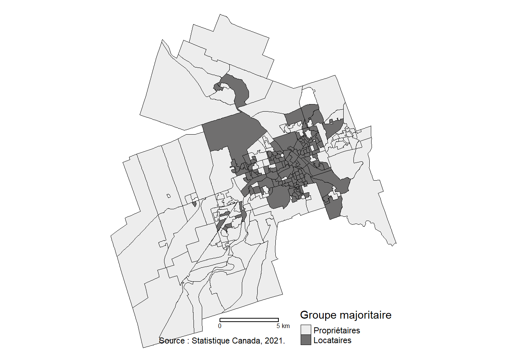
Pour calculer les statistiques de comptage de jointure, nous utilisons une matrice de contiguïté selon le partage d’un nœud (Queen). Notez que pour ces statistiques, il est préférable de ne pas standardiser la matrice spatiale (style = "B"), car nous souhaitons compter le nombre de paires formées par les deux catégories d’AD.
Pour réaliser les tests selon la méthode d’inférence basée sur la loi binomiale, nous utilisons la fonction joincount.test du package spdep. Le paramètre sampling = "free" permet de spécifier le calcul des variances selon un échantillon indépendant, puisque les nombres d’AD dans lesquelles les locataires ou les propriétaires sont majoritaires n’ont pas de limites fixes.
test1 <- joincount.test(ADSherb$maj_locataires, listw = WQueen, sampling = "free")
print(test1)
Join count test under free sampling
data: ADSherb$maj_locataires
weights: WQueen
Std. deviate for Propriétaires = 3.2832, p-value = 0.0005132
alternative hypothesis: greater
sample estimates:
Same colour statistic Expectation Variance
244.0000 163.4227 602.3289
Join count test under free sampling
data: ADSherb$maj_locataires
weights: WQueen
Std. deviate for Locataires = 3.7367, p-value = 9.324e-05
alternative hypothesis: greater
sample estimates:
Same colour statistic Expectation Variance
319.0000 214.8323 777.1427 Les résultats du test présentés à la figure 2.21 s’interprètent comme suit :
a. Valeurs observées : 244 AD sont voisines et majoritairement occupées par des propriétaires contre 319 pour les locataires.
b. Valeurs attendues : 163,4227 pour une majorité de propriétaires et 214,8323 pour une majorité de locataires.
c. variances pour les deux groupes selon la loi binomiale avec un échantillon indépendant (602,3289 et 777,1427).
d. Valeurs Z, soit \((244-\text{163,4227})/\sqrt{\text{602,3289}}=\text{3,2832}\) et \((319-\text{214,8323})/\sqrt{\text{777,1427}}=\text{3,7367}\).
e. Valeurs de p sont inférieures à 0,005, signalant que les deux modalités de la variable binaire sont significativement autocorrélées positivement selon la matrice de contiguïté.
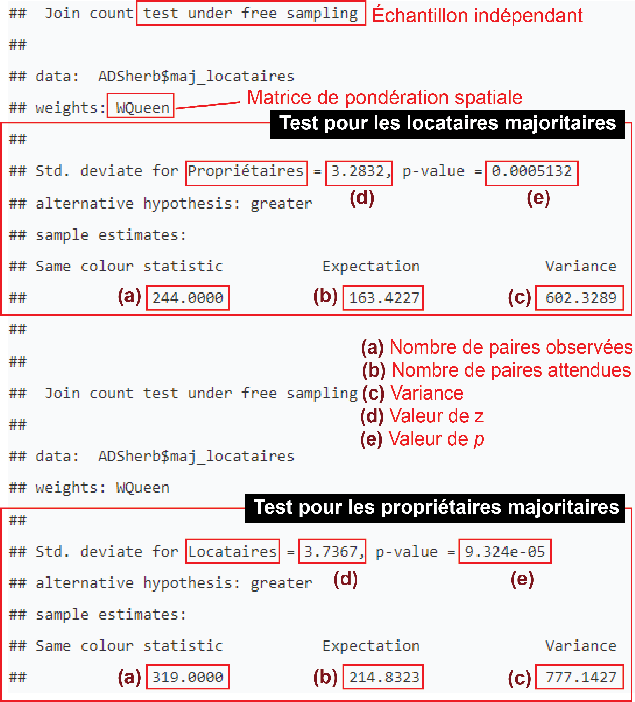
joincount.testÀ des fins de comparaison, nous effectuons le calcul des statistiques de comptage de jointure avec l’approche d’inférence selon le test des permutations (999) avec la fonction joincount.mc.
test2 <- joincount.mc(ADSherb$maj_locataires, listw = WQueen, nsim = 999)
print(test2)
Monte-Carlo simulation of join-count statistic
data: ADSherb$maj_locataires
weights: WQueen
number of simulations + 1: 1000
Join-count statistic for Propriétaires = 244, rank of observed
statistic = 1000, p-value = 0.001
alternative hypothesis: greater
sample estimates:
mean of simulation variance of simulation
162.8989 111.4337
Monte-Carlo simulation of join-count statistic
data: ADSherb$maj_locataires
weights: WQueen
number of simulations + 1: 1000
Join-count statistic for Locataires = 319, rank of observed statistic =
1000, p-value = 0.001
alternative hypothesis: greater
sample estimates:
mean of simulation variance of simulation
213.8448 128.1032 L’approche d’inférence basée sur les permutations signale aussi que les deux distributions sont significativement autocorrélées spatialement (p = 0,001).
Fonction joincount.multi
Pour une variable qualitative comprenant plus de deux modalités (catégories), utilisez la fonction joincount.multi du package spdep. Cependant, celle-ci ne renvoie pas de valeurs de p, mais uniquement des valeurs de Z et des variances pour chaque modalité. Il est possible d’obtenir des valeurs de p en utilisant la fonction pnorm et surtout en ajustant ces valeurs de p pour contrôler l’effet de la multiplication des tests de significativité avec la fonction p.adjust.
2.3.3 Indice de Lee : autocorrélation spatiale dans un contexte bivarié
À la section 2.3.1, nous avons vu que le I de Moran permet d’évaluer le degré d’autocorrélation spatiale d’une variable continue, c’est-à-dire de vérifier si les entités spatiales proches ou voisines ont tendance à avoir des valeurs (dis)similaires pour une seule variable continue. Il est logique de vouloir étendre cette analyse à un contexte bivarié : est-ce que deux variables continues partagent ou non une relation marquée par de l’autocorrélation spatiale? En d’autres termes, l’association spatiale bivariée cherche à capturer la présence d’un patron spatial commun pour les deux variables (Lee 2001).
2.3.3.1 Formulation de l’indice de Lee
Il est important de distinguer la corrélation (non spatiale) entre deux variables et l’autocorrélation spatiale entre deux variables. La première mesure à quel point deux variables tendent à avoir une relation linéaire positive ou négative, alors que la seconde mesure la présence d’un patron spatial commun. Prenons l’exemple d’un jeu de données fictives avec 25 observations et deux variables continues X et Y (tableau 2.7).
| X | Y |
|---|---|
| -0,37 | -3,04 |
| 0,42 | 1,62 |
| -2,01 | -7,57 |
| 1,33 | 7,19 |
| 1,81 | 5,99 |
| 1,18 | 8,17 |
| 0,49 | 0,15 |
| -1,57 | -14,43 |
| -4,77 | -16,86 |
| -4,08 | -10,49 |
| 1,53 | 6,28 |
| -2,96 | -6,90 |
| -1,91 | 4,51 |
| 1,44 | 6,57 |
| -0,37 | -1,48 |
| 0,84 | -1,53 |
| -1,32 | -2,79 |
| -0,76 | -0,24 |
| -5,73 | -17,78 |
| -0,44 | 1,95 |
| -1,05 | -5,75 |
| -2,90 | -6,22 |
| -1,82 | -6,51 |
| 0,09 | -2,91 |
| 3,42 | 9,77 |
Ces deux variables sont caractérisées par une forte corrélation linéaire positive avec un coefficient de corrélation de Pearson proche de 1 (figure 2.22).
Retour sur la notion de corrélation entre deux variables continues.
Pour un rappel sur la notion de corrélation entre deux variables continues, notamment sur l’interprétation du coefficient de corrélation de Pearson, nous vous invitons à lire la section suivante (Apparicio et Gelb 2022).
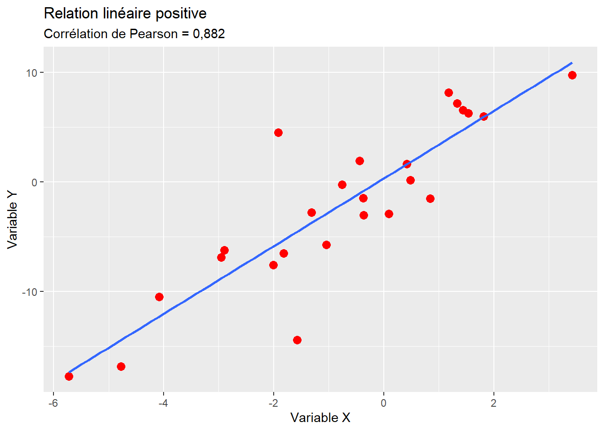
Cependant, cette information relative à la corrélation entre les deux variables ne nous permet pas d’appréhender leurs caractéristiques spatiales. En effet, ce tableau de données peut correspondre aux différents patrons spatiaux. En examinant les cartes a à d de la figure 2.23, nous constatons l’absence de tout patron spatial apparent. Par contre, à la figure 2.23 (e), nous observons une configuration spatiale particulière : à la fois, une forte autocorrélation spatiale positive univariée de chacune des deux variables (X et Y) et une forte autocorrélation spatiale positive bivariée puisque les deux patrons spatiaux de X et Y sont similaires.
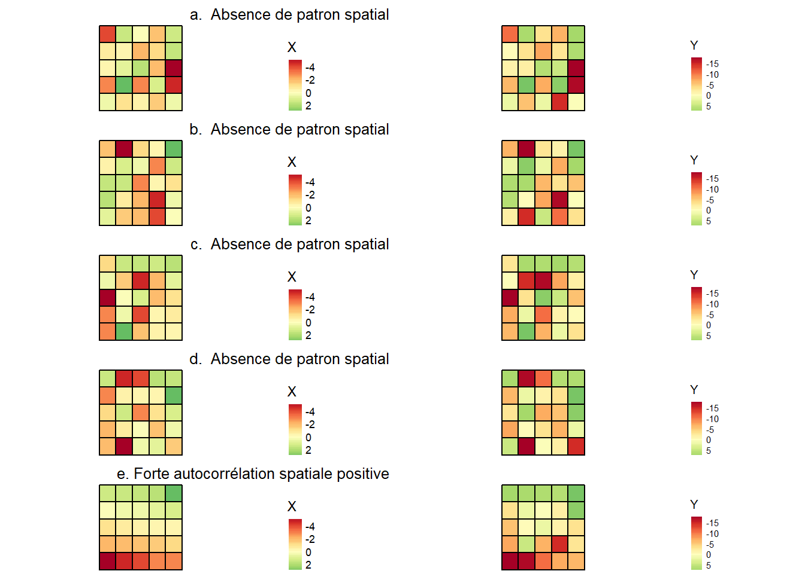
Maintenant que nous avons fait la distinction entre la corrélation bivariée et l’autocorrélation spatiale bivariée, nous pouvons présenter un indicateur d’autocorrélation spatiale globale bivariée, soit l’indice de Lee (2001). Cet indicateur est construit à partir du produit de l’autocorrélation univariée de chacune des deux variables (numérateur) et de la corrélation de Pearson entre les versions spatialement décalées de ces variables (dénominateur). La formule de l’indicateur est la suivante :
\[ \begin{aligned} L_{X, Y}=\frac{n}{\sum_i\left(\sum_j v_{i j}\right)^2} \cdot \frac{\sum_i\left[\left(\sum_j v_{i j}\left(x_j-\bar{x}\right)\right) \cdot\left(\sum_j v_{i j}\left(y_j-\bar{y}\right)\right)\right]}{\sqrt{\sum_i\left(x_i-\bar{x}\right)^2} \sqrt{\sum_i\left(y_i-\bar{y}\right)^2}} \end{aligned} \tag{2.18}\]
Si la matrice de pondération spatiale est standardisée en ligne, l’indice de Lee est simplifié comme suit :
\[ \begin{aligned} L_{X, Y}= \frac{\sum_i\left[\left(\sum_j v_{i j}\left(x_j-\bar{x}\right)\right) \cdot\left(\sum_j v_{i j}\left(y_j-\bar{y}\right)\right)\right]}{\sqrt{\sum_i\left(x_i-\bar{x}\right)^2} \sqrt{\sum_i\left(y_i-\bar{y}\right)^2}} \end{aligned} \tag{2.19}\]
Cet indicateur varie entre −1 (autocorrélation spatiale bivariée négative) et +1 (autocorrélation bivariée positive).
Nous présentons trois cas à la figure 2.24 pour illustrer son interprétation. Prenons trois variables X, Y et X’, avec X’ étant l’inverse spatial de X. Pour simplifier l’exemple, ces trois variables ne peuvent avoir que trois valeurs (1, 2 ou 3).
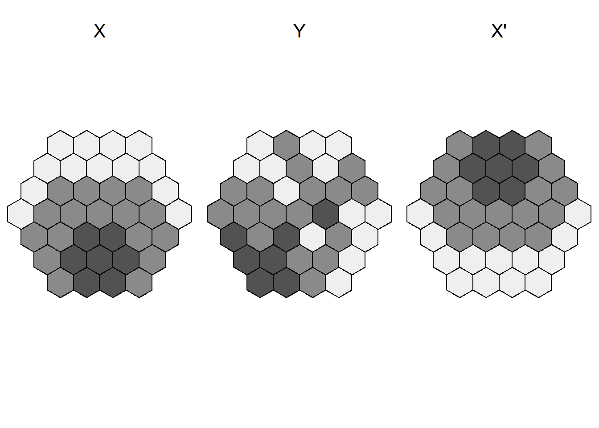
Si nous calculons l’autocorrélation spatiale entre toutes les paires de variables avec une matrice de contiguïté standardisée, nous obtenons la matrice au tableau 2.8. Les résultats démontrent que les variables X et Y partagent un patron d’autocorrélation spatiale positive modérée (0,327), alors que les variables X et X’ partagent un patron d’autocorrélation spatiale négative (−0,512). En d’autres termes, les endroits où X tend à avoir des regroupements d’observations avec des valeurs fortes, X’ tend à avoir des regroupements d’observations avec des valeurs faibles.
| X | Y | X’ | |
|---|---|---|---|
| X | 0,327 | -0,512 | |
| Y | 0,327 | -0,293 | |
| X’ | -0,512 | -0,293 |
Significativité du test de Lee
Au même titre que pour les indicateurs vus précédemment, il est possible de tester si l’indice de Lee obtenu est significativement différent de 0 avec des permutations Monte-Carlo.
2.3.3.2 Mise en œuvre dans R
Pour décrire le calcul de l’indice de Lee dans R, nous utilisons le jeu de données spatiales LyonIris du package geocmeans qui comprend quatre variables environnementales : le bruit routier (Lden dB(A)) (Lden), le dioxyde d’azote (ug/m3) (NO2), les particules fines PM2,5 (PM25) et la canopée (%) (VegHautPrt) pour les îlots regroupés pour l’information statistique (IRIS) de l’agglomération lyonnaise (figure 2.25).

Il est facile de calculer l’indice de Lee en utilisant les fonctions lee.test(x, y, listw),lee.mc(x, y, listw) ou lee(x, y, listw, n) du package spdep. Par exemple, le code ci-dessous permet de le calculer pour les variables Lden et NO2.
library(geocmeans)
data("LyonIris")
## Matrice de pondération spatiale de contiguïté standardisée
nb <- poly2nb(LyonIris, queen = TRUE)
Wmat <- nb2listw(nb, style = 'W')
## Calcul de l'indice de Lee entre les deux variables
lee.test(LyonIris$Lden, LyonIris$NO2, listw = Wmat)
Lee's L statistic randomisation
data: LyonIris$Lden , LyonIris$NO2
weights: Wmat
Lee's L statistic standard deviate = 17.135, p-value < 2.2e-16
alternative hypothesis: greater
sample estimates:
Lee's L statistic Expectation Variance
0.4072785543 0.1243825152 0.0002725625 lee.mc(LyonIris$Lden, LyonIris$NO2, listw = Wmat, nsim = 999)
Monte-Carlo simulation of Lee's L
data: LyonIris$Lden , LyonIris$NO2
weights: Wmat
number of simulations + 1: 1000
statistic = 0.40728, observed rank = 1000, p-value = 0.001
alternative hypothesis: greaterSi vous analysez plusieurs variables simultanément, il est pertinent de construire à la fois une matrice de corrélation et une matrice d’autocorrélation spatiale bivariée. Pour cette dernière, la diagonale peut être remplacée par le I de Moran de chaque variable.
## Liste des variables à analyser
vars <- c("Lden","NO2","PM25","VegHautPrt")
## Calcul de la matrice de corrélation de Pearson
corr_mat <- cor(st_drop_geometry(LyonIris)[vars])
## Calcul d'une matrice d'autocorrélation spatiale bivariée (indice de Lee)
bivar_autocor_mat <- sapply(vars, function(x1){
row_values <- sapply(vars, function(x2){
test <- lee(LyonIris[[x1]], LyonIris[[x2]], listw = Wmat, n = nrow(LyonIris))
return(test$L)
})
})
# Remplacement de la diagonale par les valeurs du I de Moran
moranIs <- sapply(vars, function(x){
moran(LyonIris[[x]], Wmat, n = nrow(LyonIris), S0 = nrow(LyonIris))[[1]]
})
diag(bivar_autocor_mat) <- moranIs| Lden | NO2 | PM25 | VegHautPrt | |
|---|---|---|---|---|
| Lden | 1,000 | 0,623 | 0,489 | -0,227 |
| NO2 | 0,623 | 1,000 | 0,901 | -0,283 |
| PM25 | 0,489 | 0,901 | 1,000 | -0,392 |
| VegHautPrt | -0,227 | -0,283 | -0,392 | 1,000 |
Sans surprise, les différents polluants sont corrélés positivement entre eux et moyennement corrélés négativement avec le couvert végétal. La corrélation la plus forte s’observe entre le dioxyde d’azote et les particules fines (r = 0,901; tableau 2.9).
La lecture de la diagonale du tableau 2.10 permet de constater que les deux polluants atmosphériques sont les plus fortement spatialement autocorrélés (I de Moran de 0,82 et 0,94). Leur valeur de l’indice de Lee est aussi très forte (0,79), indiquant qu’ils tendent à varier de façon conjointe dans l’espace. En revanche, l’autocorrélation spatiale entre le bruit environnemental (Lden) et le dioxyde d’azote (indice de Lee de 0,41) est à peine plus forte que celle entre le Lden et les particules fines (indice de Lee de 0,38) alors que l’écart de la corrélation entre ces paires de variables est bien plus important (respectivement de 0,62 et 0,49). La corrélation non spatiale marquée entre le bruit et le dioxyde d’azote ne se traduit que par une autocorrélation spatiale bivariée modérée (0,41). La géographie de ces deux pollutions ne peut donc se résumer à un patron commun.
| Lden | NO2 | PM25 | VegHautPrt | |
|---|---|---|---|---|
| Lden | 0,561 | 0,407 | 0,379 | -0,231 |
| NO2 | 0,407 | 0,819 | 0,789 | -0,283 |
| PM25 | 0,379 | 0,789 | 0,935 | -0,412 |
| VegHautPrt | -0,231 | -0,283 | -0,412 | 0,585 |
2.4 Autocorrélation spatiale locale
Nous avons vu que les statistiques d’autocorrélation spatiale globale comme le I de Moran (section 2.3.1), les statistiques de comptage de jointures (section 2.3.2) et l’indice de Lee (section 2.3.3) renvoient une valeur pour l’ensemble de l’espace d’étude. Une fois démontrée la présence d’autocorrélation spatiale globale (positive ou négative), il est pertinent de réaliser une analyse de l’autocorrélation spatiale locale afin de vérifier si chaque entité spatiale est significativement (dis)semblable de celles voisines ou proches. Comme l’indique l’adjectif locale, les mesures d’autocorrélation spatiale locale renvoient des valeurs pour chacune des entités spatiales.
2.4.1 Statistiques locales de Getis et Ord : repérer les points chauds et froids pour une variable continue
2.4.1.1 Formulation des statistiques locale de Getis et Ord
Les statistiques locales de Getis et Ord permettent d’évaluer la similarité d’une entité spatiale avec celles voisines ou proches en fonction d’une variable continue (Getis et Ord 1992; Ord et Getis 1995). Autrement dit, elles nous informent si les valeurs fortes et les valeurs faibles d’une variable continue se regroupent significativement dans l’espace, et ce, avec n’importe quel type de matrice de contiguïté, de proximité, de plus proches voisins, etc. Cartographier ces statistiques permet alors de vérifier simultanément l’existence d’agrégats spatiaux de valeurs fortes (points chauds) et d’agrégats spatiaux de valeurs faibles (points froids).
Il existe deux versions légèrement différentes de ces mesures locales (Getis et Ord 1992; Ord et Getis 1995) :
\(G_i\) tient compte uniquement des entités voisines ou proches à l’entité spatiale \(i\). Ainsi, \(\Sigma_{j=1}^n w_{ij}x_j\) représente la moyenne pondérée (par les poids de la matrice de pondération spatiale standardisée en ligne) de la variable continue \(X\) dans les entités voisines ou proches.
\(G_i^*\) tient compte à la fois des valeurs des entités voisines ou proches, mais aussi de celle de \(i\).
Toutefois, nous cartographions rarement les valeurs de \(G_i\) et de \(G_i^*\), mais plutôt celles de \(Z(G_i)\) et de \(Z(G_i^*)\) (équation 2.20 et équation 2.21) qui représentent la cote Z qui, lorsque positive, indique un agrégat de valeurs plus élevées que la moyenne, et qui, lorsque négative, indique un agrégat de valeurs plus faibles que la moyenne (Bivand et Wong 2018).
À première vue, ces deux formules peuvent sembler quelque peu complexes! Retenez simplement que le numérateur est la différence entre \(G_i\) ou \(G_i^*\) et la valeur attendue de \(G_i\) ou de \(G_i^*\) pour une distribution aléatoire (soit globalement la moyenne de la variable), tandis que le dénominateur représente l’écart-type de \(G_i\) ou de \(G_i^*\).
\[ Z(G_i) = \frac{\bigr[ \Sigma_{j=1}^n w_{ij}x_j \bigr] - \bigr[ (\Sigma_{j=1}^nw_{ij}) \bar x_i \bigr]} {s_i \sqrt{ \Bigr[ \Bigl((n-1)\Sigma_{j=1}^nw_{ij}^2-(\Sigma_{j=1}^nw_{ij})^2\Bigl) \Bigr] / (n-1) } } = \frac{G_i - \mathbb{E}(G_i)}{\sqrt{Var(G_i)}} \text{, }i \neq j \tag{2.20}\]
\[\text{avec } \bar x_i=\frac{\Sigma_{j=1}^nx_j}{n-1} \text{, et } s_i = \sqrt{ \frac{\Sigma_{j=1}^nx_j^2}{n-1}-\bar x^2} \text{, } i \neq j\] \[ Z(G_i^*) = \frac{\bigr[ \Sigma_{j=1}^n w_{ij}x_j \bigr] - \bigr[ (\Sigma_{j=1}^nw_{ij}) \bar x^* \bigr]} {s^* \sqrt{ \Bigr[ \Bigl((n-1)\Sigma_{j=1}^nw_{ij}^2-(\Sigma_{j=1}^nw_{ij})^2\Bigl) \Bigr] / (n-1) } } = \frac{G_i^* - \mathbb{E}(G_i^*)}{\sqrt{Var(G_i^*)}}\text{, tous } \tag{2.21}\]
\[\text{avec } \bar x^*=\frac{\Sigma_{j=1}^nx_j}{n} \text{, et } s^* = \sqrt{ \frac{\Sigma_{j=1}^nx_j^2}{n}-\bar x^{*2}} \text{, tous } j\] avec :
n, le nombre d’entités spatiales dans la couche géographique;
\(w_{ij}\), la valeur de la pondération spatiale entre les entités spatiales \(i\) et \(j\);
\(x_j\), la valeur de variable continue \(X\) pour l’entité spatiale \(j\);
\(\bar{x^*}\), la valeur moyenne de la variable pour toutes les observations;
\(\bar{x_i}\), la valeur moyenne de la variable pour toutes les observations sauf \(i\).
Deux manières de calculer \(Z(G_i)\) et \(Z(G_i^*)\) avec le package spdep
- la fonction
localGvous renvoie les valeurs de cote Z (Z-score en anglais) des statistiques de Getis et Ord avec les formules décrites plus haut. - la fonction
localG_permpermet de les obtenir avec la méthode Monte-Carlo (avec habituellement 999 permutations).
Cartographie des cotes Z
À partir des cotes Z, utilisez les bornes des classes suivantes et la palette de couleurs -RdBu :
- Minimum à -3,29 : point froid significatif avec p < 0,001 (bleu foncé).
- -3,29 à -2,58 : point froid significatif avec p < 0,01 (bleu).
- -2,58 à -1,96 : point froid significatif avec p < 0,05 (bleu pâle).
- -1,96 à 1,96 : non significatif (gris).
- 1,96 à 2,58 : point chaud significatif avec p < 0,05 (rouge pâle).
- 2,58 à 3,29 : point chaud significatif avec p < 0,01 (rouge).
- 3,29 à Maximum : point chaud significatif avec *p <0 ,001 (rouge foncé).
Avec la palette -RdBu, les points froids et les points chauds sont respectivement bleus et rouges comme les pastilles de votre robinet! Bref, un beau travail de plomberie!
Pour un rappel sur la cote Z et les valeurs de p associées, consultez ce lien.
2.4.1.2 Mise en œuvre dans R
La syntaxe ci-dessous calcule les deux statistiques locales avec localG et localG_perm pour le revenu moyen des ménages pour les aires de diffusion de 2021 de la ville de Sherbrooke.
Rook1 <- poly2nb(AD.DR, queen=FALSE)
## Matrice de pondération
W.RookG <- nb2listw(Rook1, zero.policy=TRUE)
W.RookStar <-nb2listw(include.self(Rook1), zero.policy=TRUE) # matrice incluant elle-même
## Calcul du Z(Gi) et du Z(Gi*)
localGetis <- localG(AD.DR$RevMedMenage, W.RookG)
localGetisStar <- localG(AD.DR$RevMedMenage, W.RookStar)
## Calcul avec la méthode Monte-Carlo (999 permutations)
localGetis.MC999 <- localG_perm(AD.DR$RevMedMenage, W.RookG, nsim = 999)
localGetis.StarMC999 <- localG_perm(AD.DR$RevMedMenage, W.RookStar, nsim = 999)
## Sommaires statistiques
summary(localGetis) Min. 1st Qu. Median Mean 3rd Qu. Max.
-3.80885 -1.70432 -0.09828 -0.04120 1.41123 3.91835 summary(localGetisStar) Min. 1st Qu. Median Mean 3rd Qu. Max.
-4.04870 -1.88689 -0.13297 -0.03841 1.54641 4.10379 summary(localGetis.MC999) Min. 1st Qu. Median Mean 3rd Qu. Max.
-3.80885 -1.70432 -0.09828 -0.04120 1.41123 3.91835 summary(localGetis.StarMC999) Min. 1st Qu. Median Mean 3rd Qu. Max.
-4.04870 -1.88689 -0.13297 -0.03841 1.54641 4.10379 Cartographions ces valeurs et repérons les regroupements de valeurs significativement fortes et faibles avec les statistiques de Getis et Ord (figure 2.26 et figure 2.27). Les quatre cartes sont très semblables et permettent de repérer un regroupement de valeurs faibles dans le centre-ville et un autre de valeurs fortes dans l’est de la ville.
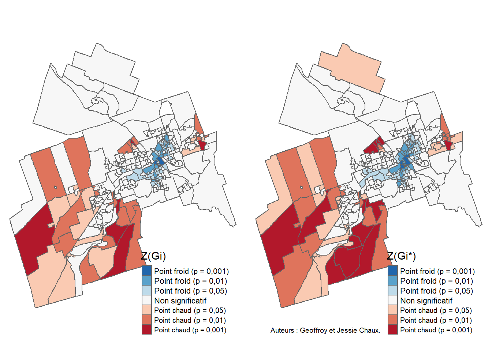
## Enregistrement les résultats dans deux champs de la couche des AD
AD.DR$RevMed_localGetis.MC999 <- localGetis.MC999
AD.DR$RevMed_localGetis.StarMC999 <- localGetis.StarMC999
coupures = c(-Inf, -3.29, -2.58, -1.96, 1.96, 2.58, 3.29, Inf)
# Définition des intervalles et des noms des classes
classes.intervalles = c(-Inf, -3.29, -2.58, -1.96, 1.96, 2.58, 3.29, Inf)
classes.noms = c("Point froid (p = 0,05)",
"Point froid (p = 0,01)",
"Point froid (p = 0,001)",
"Non significatif",
"Point chaud (p = 0,05)",
"Point chaud (p = 0,01)",
"Point chaud (p = 0,001)")
# Création d'un champ avec les noms des classes
AD.DR$RevMed_localGetis.MC999P <- cut(AD.DR$RevMed_localGetis.MC999,
breaks = classes.intervalles,
labels = classes.noms)
AD.DR$RevMed_localGetis.StarMC999P <- cut(AD.DR$RevMed_localGetis.StarMC999,
breaks = classes.intervalles,
labels = classes.noms)
## Cartographie pour le Z(Gi) Mont-Carlo
Carte3 = tm_shape(AD.DR)+
tm_polygons(col ="RevMed_localGetis.MC999P",
title="Z(Gi)", palette="-RdBu", lwd = 1)+
tm_layout(frame =FALSE)
## Cartographie pour le Z(Gi)* Mont-Carlo
Carte4 = tm_shape(AD.DR)+
tm_polygons(col ="RevMed_localGetis.StarMC999P",
title="Z(Gi*)", palette="-RdBu", lwd = 1)+
tm_layout(frame =FALSE)+
tm_credits("Auteurs : Geoffroy et Jessie Chaux.",
position = c("right", "bottom"), size = 0.7, align = "right")
## Composition avec les deux cartes
tmap_arrange(Carte3, Carte4, ncol = 2, nrow = 1)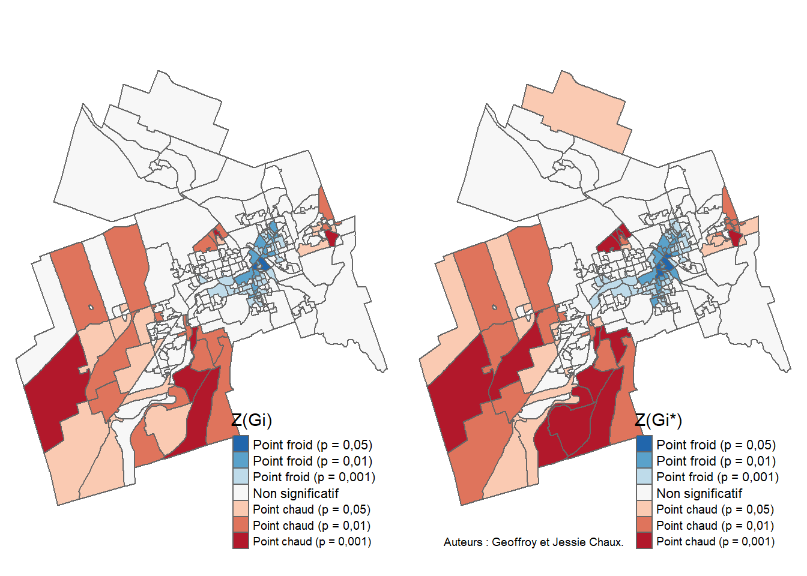
2.4.2 Version locale du I de Moran
2.4.2.1 Formulation de la version locale du I de Moran
Une version locale du I de Moran (\(I_i\)) a été proposée par Luc Anselin (1995). Elle permet de vérifier si une entité spatiale est voisine ou proche – dépendamment de la matrice spatiale utilisée – d’entités spatiales avec des valeurs semblables (contexte d’autocorrélation spatiale locale positive) ou dissemblables (contexte d’autocorrélation spatiale locale négative). Le I de Moran local s’écrit :
\[ I_i = \frac{(x_i-\bar{X})\Sigma_{j=1}^n w_{ij}(x_j-\bar{X})} {\frac{1}{n} \Sigma_{i=1}^n(x_i-\bar{X})^2} = \frac{z_i \Sigma_{j=1}^n z_j}{\frac{1}{n}\Sigma_{i=1}^n z_i^2} \text{, } i \ne j \tag{2.22}\]
avec :
- \(z_i\) étant la valeur de la variable continue centrée \(X\) pour l’entité spatiale \(i\), c’est-à-dire simplement l’écart de \(i\) à la moyenne de \(X\) (\(x_i - \bar X\)).
- \(z_j\) étant la valeur de la variable centrée de \(X\) pour l’entité spatiale \(j\).
- \(w_{ij}\) étant la valeur de la matrice de pondération spatiale standardisée en ligne entre \(i\) et \(j\).
- \(n\) étant le nombre d’entités spatiales dans la couche géographique.
Comme pour la version globale, il est possible de tester la significativité du I de Moran local de manière classique (selon la loi normale) ou avec l’approche Monte-Carlo (avec habituellement 999 permutations).
Test de significativité du I de Moran local.
Pour comprendre les différentes variantes pour tester la significativité (Anselin 1995; Sokal, Oden et Thomson 1998), consultez Bivand et Wong (2018) ou l’ouvrage de Dubé et Legros (2014).
2.4.2.2 Mise en œuvre dans R
Le calcul du I de Moran local s’opère avec les fonctions localmoran et localMoranI.mc du package spdep (voir la syntaxe ci-dessous). Comme pour la version globale, les résultats du I de Moran local sont les mêmes pour les deux fonctions, seules les valeurs de p peuvent varier.
## Calcul du I de Moran local
localMoranI <- localmoran(AD.DR$RevMedMenage, # variable
W.RookG) # matrice de pondération spatiale
## Calcul du I de Moran local avec la méthode Monte-Carlo
localMoranI.mc <- localmoran_perm(AD.DR$RevMedMenage, # variable
W.RookG, # matrice de pondération spatiale
nsim = 999) # nombre de permutations
## Sommaires statistiques
summary(localMoranI) Ii E.Ii Var.Ii Z.Ii
Min. :-0.90053 Min. :-3.054e-02 Min. :0.0000003 Min. :-1.9962
1st Qu.: 0.08313 1st Qu.:-5.368e-03 1st Qu.:0.0370546 1st Qu.: 0.4539
Median : 0.49029 Median :-2.755e-03 Median :0.1339044 Median : 1.4404
Mean : 0.61678 Mean :-4.032e-03 Mean :0.2149974 Mean : 1.2503
3rd Qu.: 0.97602 3rd Qu.:-8.287e-04 3rd Qu.:0.2510284 3rd Qu.: 2.1938
Max. : 3.37625 Max. :-8.000e-09 Max. :1.8207164 Max. : 3.9184
Pr(z != E(Ii))
Min. :0.0000892
1st Qu.:0.0282519
Median :0.1268505
Mean :0.2467939
3rd Qu.:0.3948293
Max. :0.9833048 summary(localMoranI.mc) Ii E.Ii Var.Ii Z.Ii
Min. :-0.90053 Min. :-0.0665060 Min. :0.0000003 Min. :-2.0090
1st Qu.: 0.08313 1st Qu.:-0.0098391 1st Qu.:0.0375827 1st Qu.: 0.4371
Median : 0.49029 Median :-0.0005803 Median :0.1378011 Median : 1.3857
Mean : 0.61678 Mean :-0.0033491 Mean :0.2181999 Mean : 1.2349
3rd Qu.: 0.97602 3rd Qu.: 0.0038691 3rd Qu.:0.2598807 3rd Qu.: 2.1366
Max. : 3.37625 Max. : 0.0384581 Max. :1.8977038 Max. : 3.9251
Pr(z != E(Ii)) Pr(z != E(Ii)) Sim Pr(folded) Sim Skewness
Min. :0.0000867 Min. :0.0020 Min. :0.0010 Min. :-0.44387
1st Qu.:0.0326292 1st Qu.:0.0240 1st Qu.:0.0120 1st Qu.:-0.21290
Median :0.1302435 Median :0.1360 Median :0.0680 Median :-0.11157
Mean :0.2498439 Mean :0.2546 Mean :0.1273 Mean :-0.01317
3rd Qu.:0.3932316 3rd Qu.:0.4120 3rd Qu.:0.2070 3rd Qu.: 0.21125
Max. :0.9889440 Max. :0.9980 Max. :0.4990 Max. : 0.42086
Kurtosis
Min. :-0.61550
1st Qu.:-0.27268
Median :-0.16995
Mean :-0.16364
3rd Qu.:-0.05963
Max. : 0.32046 Avec la cartographie du I de Moran local, nous repérons localement l’autocorrélation spatiale positive (valeurs similaires, fortes ou faibles localement) et l’autocorrélation spatiale négative (valeurs dissemblables localement) (figure 2.28).
## Ajout de champs pour le I de Moran local
AD.DR$RevMed_IlocalMoran.MC999 <- localMoranI.mc[, 1]
AD.DR$RevMed_IlocalMoran.MC999p <- localMoranI.mc[, 5]
## Cartographie
tmap_mode("plot")
Carte1 = tm_shape(AD.DR)+
tm_polygons(col ="RevMed_IlocalMoran.MC999", title="I Moran local",
style="cont", palette="-RdBu", lwd = 1)+
tm_layout(frame = FALSE)
Carte2 = tm_shape(AD.DR)+
tm_polygons(col= "RevMed_IlocalMoran.MC999p", title="valeur de p",
palette = c("darkgreen", "green", "lightgreen", "gray"), lwd = 1,
breaks = c(0, 0.001, 0.01, 0.05, Inf),
legend.format = list(text.separator = "à"),
title ="En %")+
tm_layout(frame = FALSE)
## Combinaison des deux cartes
tmap_arrange(Carte1, Carte2, ncol = 2, nrow = 1)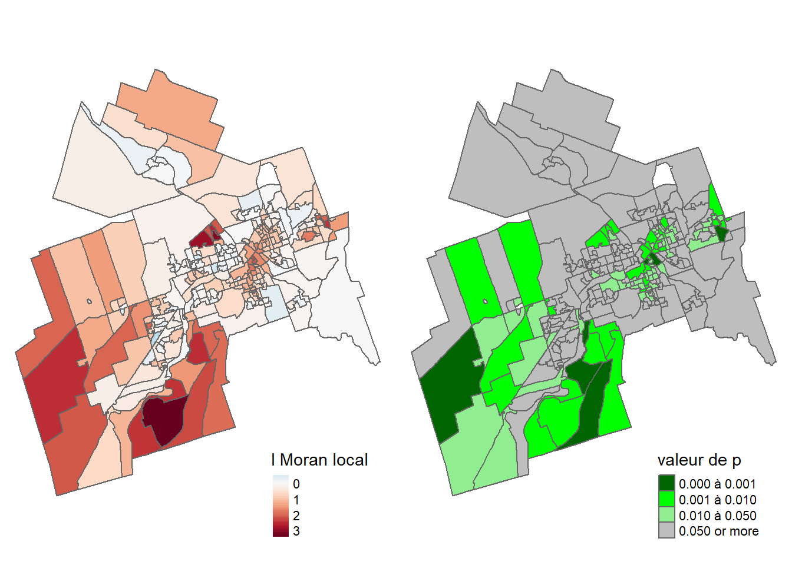
2.4.3 Typologie basée sur le diagramme de Moran
2.4.3.1 Formulation de la typologie basée sur le diagramme de Moran dans un contexte univarié
La typologie basée sur le diagramme de Moran a été proposée par Luc Anselin (1996). L’idée est fort simple, mais extrêmement efficace! Avant tout, la variable continue est centrée réduite (cote \(z\), z-score en anglais). Pour un rappel sur la cote \(z\), consultez la section suivante (Apparicio et Gelb 2022). La moyenne est ainsi égale à 0 et l’écart-type à 1. Puis, il s’agit de construire un nuage de points entre :
- Les valeurs de la variable centrée réduite (Z) sur l’axe des X pour les entités spatiales de la couche géographique.
- Les valeurs de la variable centrée réduite spatialement décalée obtenues avec les pondérations spatiales de la matrice \(W\) (voir l’encadré ci-dessous).
Comment calculer une variable spatialement décalée avec une matrice de pondération spatiale?
À la figure 2.29, nous détaillons le calcul de la valeur d’une variable spatialement décalée pour l’entité spatiale A à partir d’une matrice de contiguïté (selon le partage d’un segment) standardisée en ligne. Notez que A est adjacente à quatre entités spatiales (b, c, d et e).
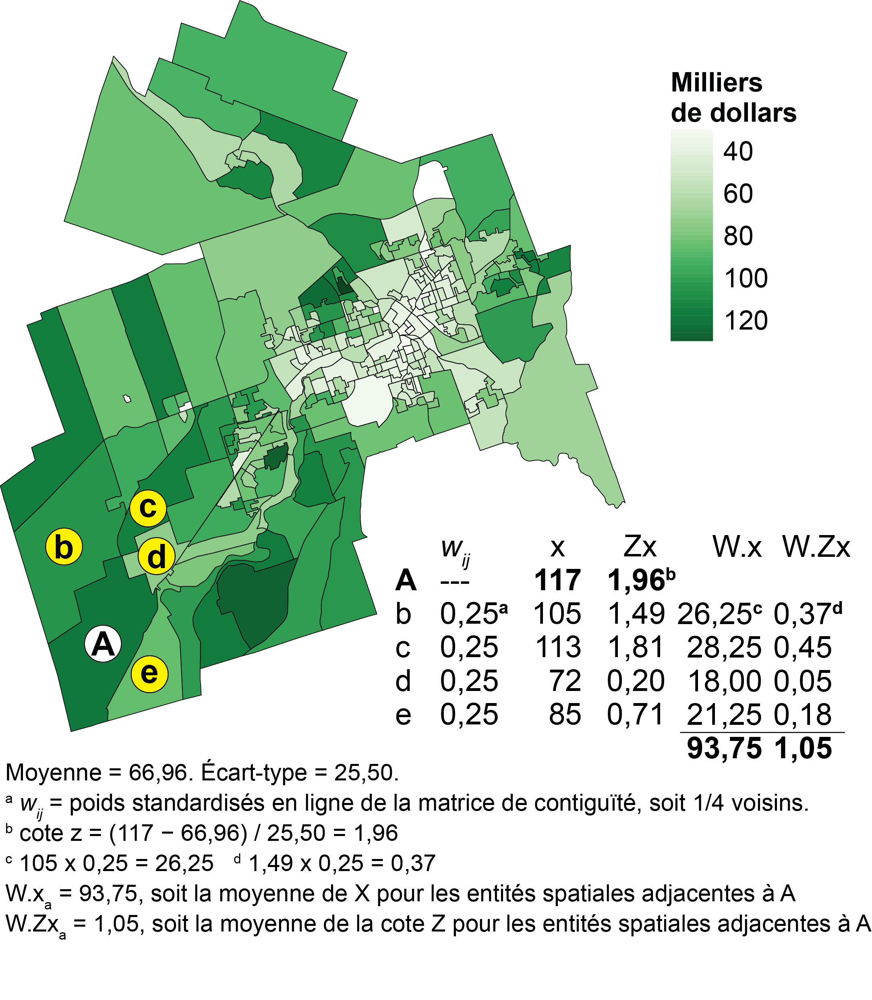
Dans R, la syntaxe est fort simple pour créer une cote \(z\) et une variable spatiale décalée :
zx <- (x - mean(x))/sd(x) # variable X centrée réduite (cote z)
wzx <- lag.listw(listW,zx) # variable X centrée réduite spatialement décalée
Analysons les différents éléments du diagramme de Moran à la figure 2.30 :
- La droite de régression résume la relation linéaire entre la variable spatialement décalée (\(W.ZX\)) et l’originale (\(ZX\)). D’ailleurs, le coefficient de régression pour la variable \(ZX\), soit la pente de la droite, équivaut au I de Moran!
- Les traits pointillés représentent les moyennes des deux variables, toutes deux égales à 0 puisqu’elles sont centrées-réduites (cote \(z\)).
Pour analyser ce nuage, nous le décomposons en quatre quadrants :
Le quadrant HH (High-High) en haut à droite regroupe des entités spatiales avec des valeurs fortes (H) qui sont voisines ou proches d’autres entités spatiales avec aussi des valeurs fortes (H). Nous sommes donc en présence d’autocorrélation spatiale locale positive avec des valeurs fortes (HH).
Le quadrant LL (Low-Low) en bas à gauche regroupe des entités spatiales avec des valeurs faibles (L) qui sont voisines ou proches d’autres entités spatiales avec aussi des valeurs faibles (L). Nous sommes donc en présence d’autocorrélation spatiale locale positive avec des valeurs faibles (LL).
Le quadrant HL (High-Low) en bas à droite regroupe des entités spatiales avec des valeurs fortes (H) qui sont voisines ou proches d’autres entités spatiales avec des valeurs faibles (L). Nous sommes donc en présence d’autocorrélation spatiale locale négative (HL). Avec humour, un collègue économiste, Jean Dubé, qualifie ce quadrant de village gaulois (Obélix, Astérix et leurs compagnons sont très forts et ils sont entourés de voisins romains plus faibles…).
Le quadrant LH (Low-High) en haut à gauche regroupe des entités spatiales avec des valeurs faibles (L) qui sont voisines ou proches d’autres entités spatiales avec des valeurs fortes (H). Nous sommes donc en présence d’autocorrélation spatiale locale négative (LH).
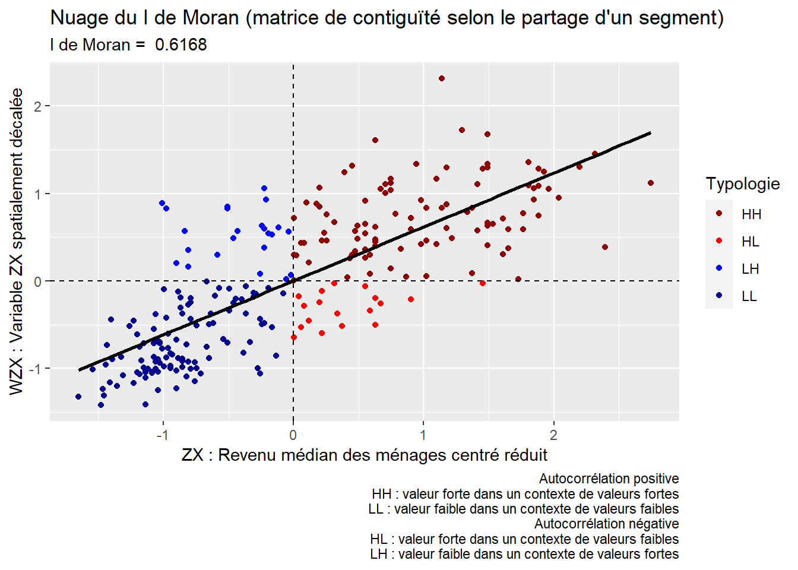
2.4.3.2 Mise en œuvre dans R
Pour créer le diagramme de Moran, nous avons écrit la fonction DiagMoranUnivarie.
source("code_complementaire/DiagrammeMoran.R")
## Réalisation du diagramme de Moran avec la fonction DiagMoranUnivarie
DiagMoranUnivarie(
x = AD.DR$RevMedMenage,
listW = W.Rook,
titre = "Diagramme de Moran (matrice de contiguïté selon le partage d'un segment)",
titreAxeX = "ZX : Revenu médian des ménages centré réduit",
titreAxeY = "WZ : Variable ZX spatialement décalée",
AfficheAide=TRUE)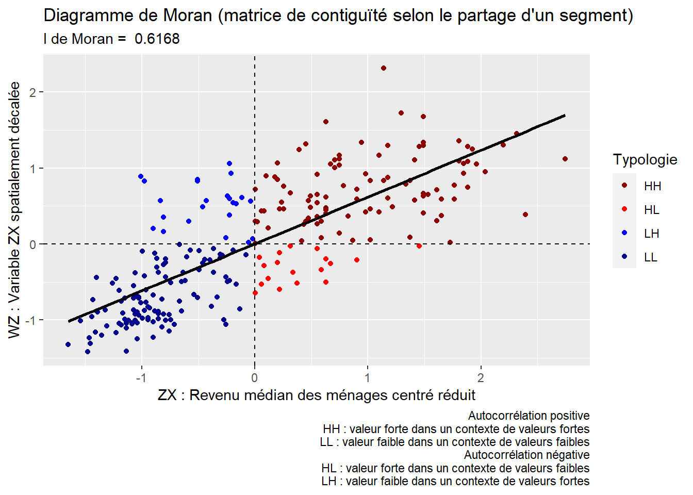
Reste à déterminer si l’autocorrélation spatiale locale pour ces quatre quadrants est significative. Rien de plus simple, il suffit d’utiliser la valeur de p du I de Moran local (section 2.4.2). Nous choisissons un seuil de signification (habituellement p = 0,05) et obtenons ainsi la typologie comprenant cinq catégories :
- Autocorrélation spatiale locale positive et significative (p < 0,05).
- HH
- LL
- Autocorrélation spatiale locale négative et significative (p < 0,05).
- HL
- LH
- Autocorrélation spatiale locale non significative (p > 0,05).
Le code R ci-dessous permet d’obtenir la typologie de l’autocorrélation spatiale avec le I de Moran local pour le revenu médian des ménages avec une matrice de contiguïté selon le partage d’un segment (Rook). La figure 2.31 dénote surtout une autocorrélation spatiale positive importante (respectivement 33 et 48 aires de diffusion classées HH et LL), comparativement à l’autocorrélation spatiale négative qui ne comprend qu’une aire de diffusion (LH).
library(dplyr)
## Cote Z (variable centrée réduite)
zx <- (AD.DR$RevMedMenage - mean(AD.DR$RevMedMenage))/sd(AD.DR$RevMedMenage)
## variable X centrée réduite spatialement décalée avec une matrice Rook
wzx <- lag.listw(W.Rook, zx)
## I de Moran local (notez que vous pouvez aussi utiliser la fonction localmoran_perm)
localMoranI <- localmoran(AD.DR$RevMedMenage, W.Rook)
#localMoranI.mc <- localmoran_perm(AD.DR$RevMedMenage, W.Rook, n=999)
plocalMoranI <- localMoranI[, 5]
## Choix d'un seuil de signification
signif = 0.05
## Construction de la typologie
Typologie <- attributes(localMoranI)$quadr$mean
Typologie <- case_when(
localMoranI[, 5] < signif ~ Typologie,
TRUE ~ "Non sign."
)
## Enregistrement de la typologie dans un champ
AD.DR$TypoIMoran.RevMedian <- Typologie
AD.DR$TypoIMoran.RevMedian <- factor(AD.DR$TypoIMoran.RevMedian,
levels = c("High-High", "High-Low", "Low-Low", "Low-High", "Non sign."),
labels = c("HH", "HL", "LL", "LH", "Non sign."))
table(AD.DR$TypoIMoran.RevMedian, useNA = "always")
HH HL LL LH Non sign. <NA>
33 0 48 1 167 0 ## Couleurs
Couleurs <- c("HH" = "#FF0000",
"HL" = "#f4ada8",
"LL" ="#0000FF",
"LH" ="#a7adf9",
"Non sign." = "#eeeeee")
## Cartographie
tmap_mode("plot")
tm_shape(AD.DR) +
tm_polygons(col = "TypoIMoran.RevMedian",
palette = Couleurs,
title ="Autocorrélation spatiale locale")+
tm_credits("HH : Positive dans un contexte de valeurs fortes (HH)
LL : Négative dans un contexte de valeurs faibles (LL)
HL : Positive dans un contexte de valeurs fortes (HL)
LH : Négative dans un contexte de valeurs fortes (LH)
Non sign. : Non significative",
size = .5,
position=c("right", "bottom"),
align = "right")+
tm_layout(frame= FALSE,
legend.outside = TRUE,
legend.title.size = 1,
legend.position = c("right", "center"))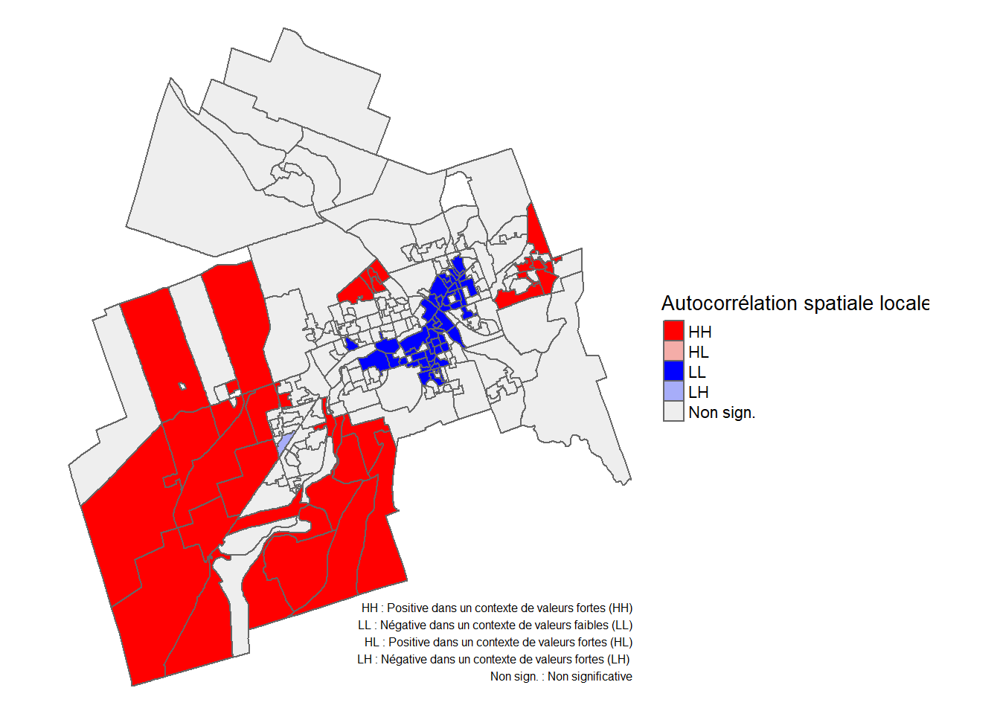
Ne pas confondre les statistiques locales de Getis et Ord et la typologie avec le I de Moran local.
Succinctement, ces deux familles de mesures renvoient deux typologies différentes :
Le I de Moran local comprend cinq classes : HH, LL, HL, LH et non significatif.
Les statistiques locales de Getis et Ord comprennent trois classes : points chauds (sensiblement l’équivalent de HH), points froids (sensiblement l’équivalent de LL) et non significatifs.
2.4.4 Version locale des statistiques de comptage de jointure (Join Count Statistics)
Une version locale des statistiques de comptage de jointure a été proposée par Luc Anselin et Xun Li (2019). Au même titre que la version locale du I de Moran, elle consiste à désagréger localement le calcul de l’indicateur global. Pour chaque observation, nous comptons ainsi le nombre de paires 0-0 (WW) ou 1-1 (BB) pour une variable binaire.
Pour déterminer si les associations 0-0 et 1-1 sont plus fréquentes que celles attendues du hasard, il est recommandé d’utiliser un test d’inférence par permutations. Ce test n’est actuellement pas implémenté dans spdep, mais il est disponible dans le package rgeoda avec la fonction local_joincount. Nous reprenons ici l’exemple des deux variables identifiant une majorité de locataires (loc_maj) ou de propriétaires (proprio_maj) pour les aires de diffusion (AD) de la ville de Sherbrooke.
library(rgeoda)
## Définition de la matrice de contiguïté avec rgeoda
wmat <- queen_weights(ADSherb)
## Création de deux variables binaires avec des valeurs de 0 et 1
## pour les locataires et propriétaires
ADSherb$loc_maj <- ifelse(ADSherb$Locataire > ADSherb$Proprietaire, 1, 0)
ADSherb$proprio_maj <- ifelse(ADSherb$Proprietaire > ADSherb$Locataire, 1, 0)
## Calcul de la version locale du join count test
testLoc <- local_joincount(wmat, ADSherb["loc_maj"], permutations = 999)
testPro <- local_joincount(wmat, ADSherb["proprio_maj"], permutations = 999)Avec le code ci-dessous, nous cartographions les AD en fonction des seuils de significativité de la version locale du test. Sans surprise, les AD avec une autocorrélation spatiale significative sont les suivantes :
- celles au centre de la ville de Sherbrooke avec une majorité de locataires (figure 2.32, a);
- celles de l’ouest de la ville avec une majorité de propriétaires (figure 2.32, b).
library(dplyr)
## Sauvegarde des résultats
ADSherb$testLoc_pvals <- testLoc$p_vals
ADSherb$testPro_pvals <- testPro$p_vals
## Calcul d'une variable avec les seuils de significativité pour les locataires
ADSherb$clusterLoc <- case_when(
ADSherb$testLoc_pvals < 0.05 & ADSherb$testLoc_pvals >= 0.01 ~ 1,
ADSherb$testLoc_pvals < 0.01 ~ 2,
TRUE ~ 0
)
ADSherb$clusterLoc <- factor(ADSherb$clusterLoc,
levels = 0:2,
labels = c("Non significatif (p > 0,05)",
"p = 0,05","p = 0,01"))
## Calcul d'une variable avec les seuils de significativité pour les propriétaires
ADSherb$clusterPro <- case_when(
ADSherb$testPro_pvals < 0.05 & ADSherb$testPro_pvals >= 0.01 ~ 1,
ADSherb$testPro_pvals < 0.01 ~ 2,
TRUE ~ 0
)
ADSherb$clusterPro <- factor(ADSherb$clusterPro,
levels = 0:2,
labels = c("Non significatif (p > 0,05)",
"p = 0,05","p = 0,01"))
## Cartographie des résultats
Carte1 <- tm_shape(ADSherb) +
tm_borders(col="black", lwd=0.5)+
tm_fill(col = "clusterLoc",
palette = c("#f0f0f0", "#fc9272", "#de2d26"),
title = "Seuil de significativité")+
tm_layout(frame=FALSE,
legend.outside = TRUE,
legend.outside.position = c("bottom", "center"),
title = "a. Locataires majoritaires",
title.size = 1)
Carte2 <- tm_shape(ADSherb) +
tm_borders(col="black", lwd=0.5)+
tm_fill(col = "clusterPro",
palette = c("#f0f0f0", "#fc9272", "#de2d26"),
title = "Seuil de significativité")+
tm_layout(frame=FALSE,
legend.outside = TRUE,
legend.outside.position = c("bottom", "center"),
title = "b. Propriétaires majoritaires",
title.size = 1)
tmap_arrange(Carte1, Carte2)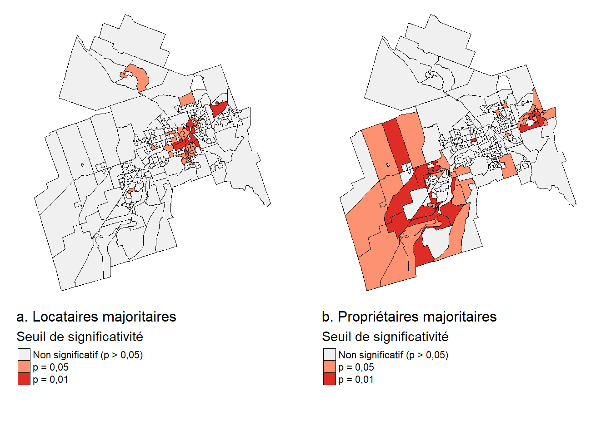
2.4.5 Version locale de l’indice de Lee
2.4.5.1 Formulation de la version locale de l’indice de Lee
Dans le cas de l’autocorrélation spatiale bivariée, l’indice de Lee dispose aussi d’une version locale. Plus exactement, la version globale de l’indice correspond à l’agrégation des contributions locales de chaque observation. En cartographiant ces contributions locales, il est possible de se faire une idée de la relation spatiale entre les deux variables à l’étude. La version locale de l’indice est définie par l’équation 2.23.
\[ L_i=\frac{n \cdot\left[\left(\sum_i w_{i j}\left(x_j-\bar{x}\right)\right)\left(\sum_i w_{i j}\left(y_j-\bar{y}\right)\right)\right]}{\sqrt{\sum_i\left(x_i-\bar{x}\right)^2} \sqrt{\sum_i\left(y_i-\bar{y}\right)^2}}=\frac{n \cdot\left(\tilde{x}_i-\bar{x}\right)\left(\tilde{y}_i-\bar{y}\right)}{\sqrt{\sum_i\left(x_i-\bar{x}\right)^2} \sqrt{\sum_i\left(y_i-\bar{y}\right)^2}} \tag{2.23}\]
Avec :
- \(n\), le nombre d’observations;
- \(W_{ij}\), la valeur de la pondération spatiale entre les entités spatiales \(i\) et \(j\);
- \(\bar{x}\), la moyenne de la variable x;
- \(\bar{y}\), la moyenne de la variable y.
2.4.5.2 Mise en œuvre dans R
Reprenons notre exemple précédent sur les pollutions atmosphériques à Lyon. Nous avions observé que le dioxyde d’azote partageait un patron d’autocorrélation spatiale positive forte avec les particules fines, et un patron moins prononcé avec le bruit. Nous allons observer ces deux relations à l’échelle locale.
library(geocmeans)
data("LyonIris")
## Liste de variables à analyser
vars <- c("Lden","NO2","PM25","VegHautPrt")
## Matrice de pondération spatiale Queen standardisée
nb <- poly2nb(LyonIris, queen = TRUE)
Wmat <- nb2listw(nb, style = 'W')
## Calcul de la version locale de l'indice de Lee entre
# NO2 et PM25
Lee_1 <- lee(LyonIris$NO2, LyonIris$PM25, listw = Wmat, n = nrow(LyonIris))
# NO2 et DBA
Lee_2 <- lee(LyonIris$NO2, LyonIris$Lden, listw = Wmat, n = nrow(LyonIris))Dans le package spdep, aucune fonction ne permet de calculer un test d’inférence pour les valeurs locales de Lee. Nous pouvons cependant assez facilement obtenir des pseudo valeurs de p en réalisant 999 permutations aléatoires et en comptant combien de fois les valeurs obtenues au hasard sont plus grandes ou plus petites que celles obtenues dans les données initiales.
## Nous créons une matrice à deux colonnes remplies de zéros qui
## servira à compter le nombre de fois où les valeurs des permutations
## sont au-dessus ou en dessous des valeurs réelles
p_vals_1 <- cbind(rep(0, nrow(LyonIris)),
rep(0, nrow(LyonIris))
)
p_vals_2 <- cbind(rep(0, nrow(LyonIris)),
rep(0, nrow(LyonIris))
)
N <- nrow(LyonIris)
for(i in 1:999){
# Permutation aléatoire de l'ordre des observations
perm_data <- LyonIris[sample(1:nrow(LyonIris)),]
# Calcul de l'indice de Lee sur les données permutées
Lee_1_perm <- lee(perm_data$NO2, perm_data$PM25, listw = Wmat, n = N)
Lee_2_perm <- lee(perm_data$NO2, perm_data$Lden, listw = Wmat, n = N)
# Test pour vérifier si les valeurs obtenues sont plus grandes
test1 <- Lee_1$localL < Lee_1_perm$localL
test2 <- Lee_2$localL < Lee_2_perm$localL
# Ajout du résultat aux matrices de valeurs de p
p_vals_1[,1] <- p_vals_1[,1] + test1
p_vals_2[,1] <- p_vals_2[,1] + test2
# Test pour vérifier si les valeurs obtenues sont plus petites
test1 <- Lee_1$localL > Lee_1_perm$localL
test2 <- Lee_2$localL > Lee_2_perm$localL
# Ajout du résultat aux matrices de valeurs de p
p_vals_1[,2] <- p_vals_1[,2] + test1
p_vals_2[,2] <- p_vals_2[,2] + test2
}
## Ajout des données originales
LyonIris$Lee1 <- Lee_1$localL
LyonIris$Lee2 <- Lee_2$localL
LyonIris$Lee1_p_higher <- p_vals_1[,1] / 999
LyonIris$Lee1_p_lower <- p_vals_1[,2] / 999
LyonIris$Lee2_p_higher <- p_vals_2[,1] / 999
LyonIris$Lee2_p_lower <- p_vals_2[,2] / 999
## Cartographie des résultats avec deux cartes dans lesquelles
## les valeurs non significatives au seuil 0,01 sont représentées en gris clair.
test_sign1 <- LyonIris$Lee1_p_higher < 0.01 | LyonIris$Lee1_p_lower < 0.01
map1 <- tm_shape(LyonIris)+tm_borders(col="black")+
tm_shape(subset(LyonIris, test_sign1)) +
tm_polygons(col = 'Lee1', n = 5, style = 'kmeans', midpoint = 0, palette = '-RdBu',
legend.format = list(digits = 2, text.separator = "à"),
title = 'Indice de Lee') +
tm_shape(subset(LyonIris, !test_sign1)) +
tm_polygons(col = 'lightgrey')+
tm_layout(legend.outside = FALSE, frame = FALSE,
title = "a. NO2 versus PM25", title.size = .75)+
tm_credits(text="Gris : non significatif (p > 0,001).",
position = c("RIGHT", "BOTTOM"))
test_sign2 <- LyonIris$Lee2_p_higher < 0.01 | LyonIris$Lee2_p_lower < 0.01
map2 <- tm_shape(LyonIris)+tm_borders(col="black")+
tm_shape(subset(LyonIris, test_sign2)) +
tm_polygons(col = 'Lee2', n = 5, style = 'kmeans', palette = '-RdBu',
legend.format = list(digits = 2, text.separator = "à"),
title = 'Indice de Lee') +
tm_shape(subset(LyonIris, !test_sign2)) +
tm_polygons(col = 'lightgrey') +
tm_layout(legend.outside = FALSE, frame = FALSE,
title = "b. NO2 versus Lden", title.size = .75)+
tm_credits(text="Gris : non significatif (p > 0,001).",
position = c("RIGHT", "BOTTOM"))
tmap_arrange(map1, map2, ncol = 2)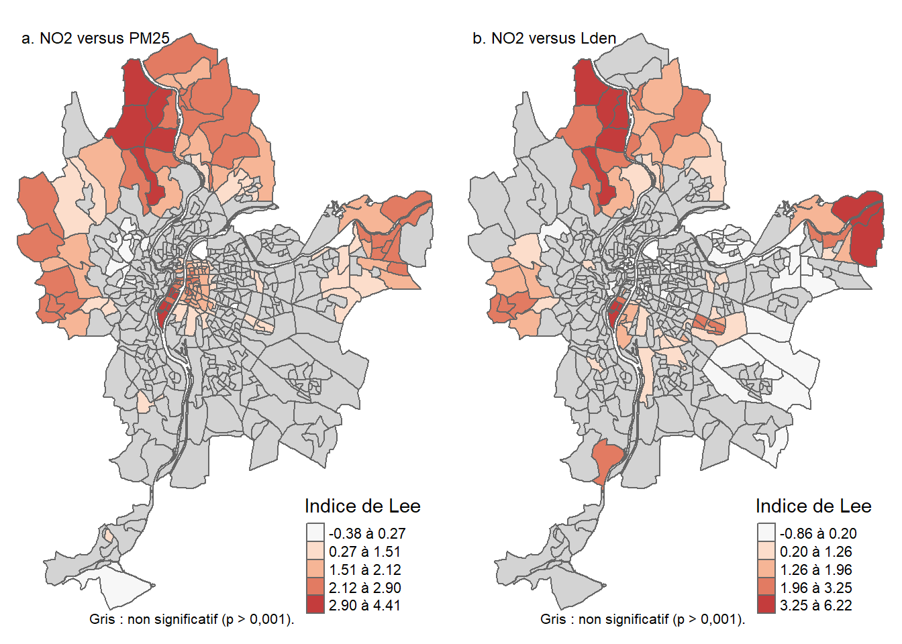
À la figure 2.33 (a), nous constatons une forte autocorrélation spatiale bivariée positive dans deux secteurs de l’agglomération :
Au centre avec des entités spatiales ayant des valeurs fortes pour les deux variables.
Dans les zones périphériques au nord, à l’est et à l’ouest avec des entités spatiales ayant des valeurs faibles pour les deux variables.
À la figure 2.33 (b), nous observons trois patrons d’autocorrélation spatiale bivariée :
Autocorrélation spatiale positive pour des entités spatiales au centre de l’agglomération avec des valeurs fortes de bruit et de dioxyde d’azote.
Autocorrélation spatiale positive pour des entités spatiales au nord de l’agglomération avec des valeurs faibles de bruit et de dioxyde d’azote.
Autocorrélation spatiale négative à l’est de l’agglomération avec des valeurs fortes pour le bruit, mais faibles pour le dioxyde d’azote.
Autocorrélation spatiale multivariée
Il est possible d’analyser l’autocorrélation spatiale dans un contexte multivarié. Cependant, ces méthodes sont parfois difficiles à interpréter, car l’augmentation de la dimensionnalité des données analysées ajoute un haut niveau d’abstraction. Si ces méthodes vous intéressent, nous vous recommandons de jeter un œil à :
L’indice de Geary multivarié local (Anselin 2019), qui peut être calculé facilement dans R (avec la fonction
local_multigearydu packagergeoda) en faisant la moyenne des valeurs locales de l’indice de Geary univarié.Les méthodes factorielles intégrant l’espace, dont l’analyse en composantes principales spatiales (spatial principal component analysis en anglais, SPCA) (Jombart et al. 2008) qui permet d’identifier des facteurs maximisant le produit de la variance expliquée d’un ensemble de variables continues et l’autocorrélation spatiale de ces facteurs (mesurée avec le I de Moran). Dans R, les packages pertinents pour ces méthodes sont
adegenetetade4.
2.4.6 Typologie basée sur le diagramme de Moran dans un contexte bivarié
2.4.6.1 Formulation de la typologie basée sur le diagramme de Moran dans un contexte bivarié
À la section 2.4.3, nous avons décrit la construction du diagramme de Moran dans un contexte univarié avec la variable centrée réduite (ZX) sur l’axe des X et la variable centrée réduite spatialement décalée (WZX) sur l’axe des Y. Par la suite, ce diagramme est décomposé en quatre quadrants (HH, LL, HL, LH). Cette démarche peut être adaptée à un contexte bivarié avec deux variables continues, c’est-à-dire avec ZX et WZY pour construire le diagramme. Les quatre quadrants s’interprètent alors comme suit (figure 2.33) :
HH (High-High) regroupe des entités spatiales avec des valeurs fortes (H) pour la variable X qui sont voisines ou proches d’autres entités spatiales avec des valeurs fortes pour la variable Y (H). Nous sommes donc en présence d’autocorrélation spatiale locale bivariée positive avec des valeurs fortes (HH).
LL (Low-Low) regroupe des entités spatiales avec des valeurs faibles (L) pour la variable X qui sont voisines ou proches d’autres entités spatiales avec des valeurs faibles pour la variable Y (L). Nous sommes donc en présence d’autocorrélation spatiale locale bivariée positive avec des valeurs faibles (LL).
HL (High-Low) regroupe des entités spatiales avec des valeurs fortes (H) pour la variable X qui sont voisines ou proches d’autres entités spatiales avec des valeurs faibles pour la variable Y (L), soit de l’autocorrélation spatiale locale bivariée négative (HL).
LH (Low-High) regroupe des entités spatiales avec des valeurs faibles (L) pour la variable X qui sont voisines ou proches d’autres entités spatiales avec des valeurs fortes (H) pour la variable Y, soit de l’autocorrélation spatiale bivariée locale négative (LH).
Pour déterminer si l’autocorrélation spatiale locale (positive ou négative) pour les quatre est significative, nous utilisons la valeur de p de la version locale du I de Moran bivariée (habituellement p = 0,05).

Non-symétrie du I de Moran bivarié et du diagramme de Moran dans un contexte bivarié
À titre de rappel, le diagramme est construit avec ZX et WZY, tout comme l’indice de Moran bivarié. Par conséquent, les résultats entre ZX et WZY (figure 2.33, a) et ZY et WZX (figure 2.33, b) ne sont pas identiques!
2.4.6.2 Mise en œuvre dans R
Pour créer le diagramme de Moran dans un contexte bivarié, nous avons écrit la fonction DiagMoranUnivarie.
source("code_complementaire/DiagrammeMoran.R")
library(ggpubr)
## Matrice de contiguïté
Queen <- poly2nb(LyonIris, queen=FALSE)
W.Queen <- nb2listw(Queen, zero.policy=TRUE, style = "W")
## Réalisation du diagramme de Moran avec la fonction DiagMoranBivarie
Diag1 <- DiagMoranBivarie(x = LyonIris$NO2,
y = LyonIris$PM25,
listW = W.Queen,
titre = "Diagramme de Moran",
titreAxeX = "ZX : Dioxyde d'azote (NO2)",
titreAxeY = "WZY : Particules fines (PM2,5)",
AfficheAide=FALSE)
Diag2 <- DiagMoranBivarie(x = LyonIris$PM25,
y = LyonIris$NO2,
listW = W.Queen,
titre = "Diagramme de Moran",
titreAxeX = "ZX : Particules fines (PM2,5)",
titreAxeY = "WZY : Dioxyde d'azote (NO2)",
AfficheAide=FALSE)
ggarrange(Diag1, Diag2)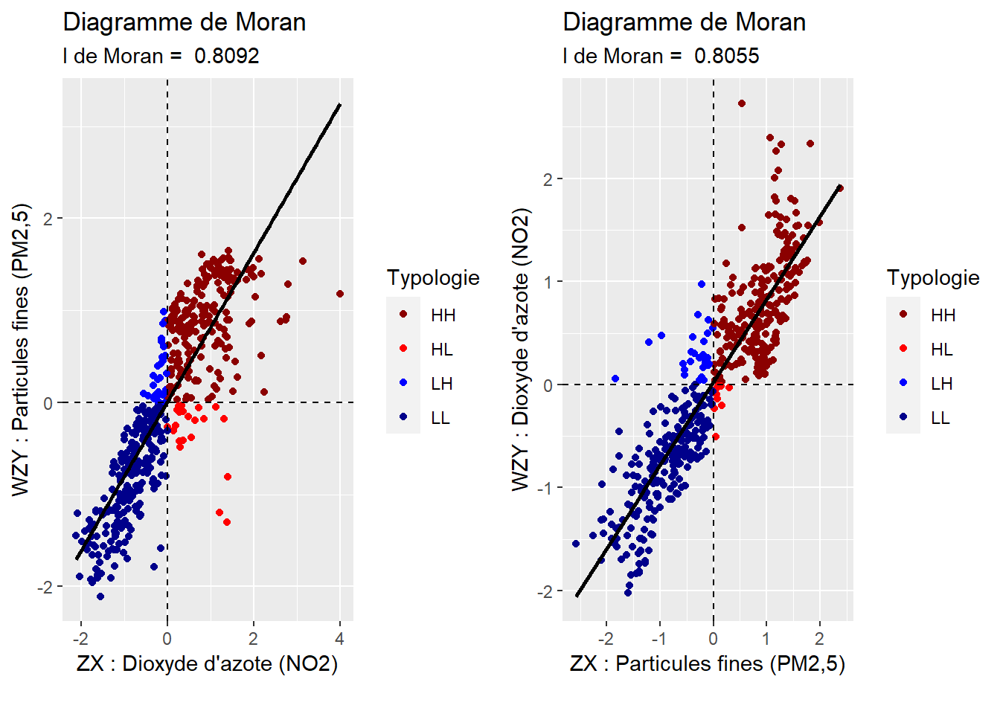
Pour mettre en œuvre la typologie, vous pouvez utiliser soit la fonction local_bimoran du package rgeoda, soit la fonction localmoran_bv du package spdep. Cette dernière est mobilisée dans le code ci-dessous pour obtenir la typologie de l’autocorrélation spatiale bivariée entre :
Le dioxyde d’azote (ZX) et les particules fines (ZWY) (figure 2.33, a).
Les particules fines (ZX) et le dioxyde d’azote (ZWY) (figure 2.33, b).
library(spdep)
## Matrice de contiguïté
Queen <- poly2nb(LyonIris, queen=FALSE)
W.Queen <- nb2listw(Queen, zero.policy=TRUE, style = "W")
## Variables centrées réduites
z.no2 <- (LyonIris$NO2 - mean(LyonIris$NO2))/sd(LyonIris$NO2)
z.pm25 <- (LyonIris$PM25 - mean(LyonIris$PM25))/sd(LyonIris$PM25)
## Variables spatialement décalées
wz.no2 <- lag.listw(W.Queen, z.no2)
wz.pm25 <- lag.listw(W.Queen, z.pm25)
## I de Moran local bivarié
localMoranBivariee_NO2_PM25 <- localmoran_bv(LyonIris$NO2, LyonIris$PM25, W.Queen, nsim = 999)
localMoranBivariee_PM25_NO2 <- localmoran_bv(LyonIris$PM25, LyonIris$NO2, W.Queen, nsim = 999)
## Valeur de p du I de Moran bivariée
plocalMoranI_NO2_PM25 <- localMoranBivariee_NO2_PM25[, 7]
plocalMoranI_PM25_NO2 <- localMoranBivariee_PM25_NO2[, 7]
## Choix d'un seuil de signification
signif = 0.05
## Construction de la typologie NO2 versus PM25
TypoNO2_PM25 <- ifelse(z.no2 > 0 & wz.pm25 > 0, "1. HH", NA)
TypoNO2_PM25 <- ifelse(z.no2 < 0 & wz.pm25 < 0, "2. LL", TypoNO2_PM25)
TypoNO2_PM25 <- ifelse(z.no2 > 0 & wz.pm25 < 0, "3. HL", TypoNO2_PM25)
TypoNO2_PM25 <- ifelse(z.no2 < 0 & wz.pm25 > 0, "4. LH", TypoNO2_PM25)
TypoNO2_PM25 <- ifelse(plocalMoranI_NO2_PM25 > signif, "Non sign", TypoNO2_PM25)
## Construction de la typologie PM25 versus NO2
TypoPM25_NO2 <- ifelse(z.pm25 > 0 & wz.no2 > 0, "1. HH", NA)
TypoPM25_NO2 <- ifelse(z.pm25 < 0 & wz.no2 < 0, "2. LL", TypoPM25_NO2)
TypoPM25_NO2 <- ifelse(z.pm25 > 0 & wz.no2 < 0, "3. HL", TypoPM25_NO2)
TypoPM25_NO2 <- ifelse(z.pm25 < 0 & wz.no2 > 0, "4. LH", TypoPM25_NO2)
TypoPM25_NO2 <- ifelse(plocalMoranI_PM25_NO2 > signif, "Non sign", TypoPM25_NO2)
## Enregistrement des résultats dans la couche LyonIRS
LyonIris$TypoNO2_PM25 <- TypoNO2_PM25
LyonIris$TypoPM25_NO2 <- TypoPM25_NO2
## Couleurs
Couleurs <- c("1. HH" = "#FF0000",
"2. LL" ="#0000FF",
"3. HL" = "#f4ada8",
"4. LH" ="#a7adf9",
"Non sign" = "#eeeeee")
## Cartographie
tmap_mode("plot")
Carte1 <- tm_shape(LyonIris) +
tm_polygons(col = "TypoNO2_PM25",
palette = Couleurs,
title ="Typologie")+
tm_layout(frame = FALSE,
legend.outside = TRUE,
legend.outside.position = c("bottom", "center"),
title = "a. NO2 versus PM2,5",
title.size = .9)
Carte2 <- tm_shape(LyonIris) +
tm_polygons(col = "TypoPM25_NO2",
palette = Couleurs,
title ="Typologie")+
tm_layout(frame = FALSE,
legend.outside = TRUE,
legend.outside.position = c("bottom", "center"),
title = "b. PM2,5 versus NO2",
title.size = .9)
tmap_arrange(Carte1, Carte2)
Autocorrélation spatiale locale dans un contexte bivarié pour les variables binaires
À la section 2.4.4, nous avons abordé les statistiques locales de comptage de jointure. Tout comme la version locale de I de Moran, elles peuvent être adaptées à un contexte bivarié avec deux variables binaires. Pour ce faire, vous pouvez utiliser la fonction local_bijoincount du package rgeoda.
2.4.7 Autocorrélation locale pour une variable qualitative (catégorielle) : l’indicateur ELSA
2.4.7.1 Formulation de l’indicateur ELSA
Récemment, un indicateur basé sur la mesure de l’entropie locale a été proposé pour mesurer l’autocorrélation spatiale locale d’une variable qualitative comprenant plusieurs modalités (catégories) (Naimi et al. 2019). Cet indicateur ELSA (Entropy-based local indicator of spatial association), qui varie de 0 (autocorrélation spatiale parfaite) à 1 (forte hétérogénéité spatiale), est calculé comme suit :
\[ \begin{aligned} E_i=E_{a i} \times E_{c i} \\ & E_{a i}=\frac{\sum_j \omega_{i j} d_{i j}}{\max \{d\} \sum_j \omega_{i j}}, j \neq i \\ & E_{c i}=-\frac{\sum_{k=1}^{m_\omega} p_k \log _2\left(p_k\right)}{\log _2 m_i}, j \neq i \\ & m_i=\left\{\begin{array}{l} m \text { if } \sum_j \omega_{i j}>m \\ \sum_j \omega_{i j}, \text { otherwise } \end{array}\right. \\ & d_{i j}=\left|c_i-c_j\right| \end{aligned} \tag{2.24}\]
Il s’agit donc du produit de deux termes, soit \(E_{a i}\) et \(E_{c i}\). Le premier mesure la dissimilarité entre l’observation i et ses voisins j. Le second est l’indice d’entropie de Shannon et quantifie la diversité des observations voisines de i.
L’indicateur ELSA a la particularité de tenir compte du degré de dissimilarité entre les modalités (catégories) de la variable qualitative à l’étude. Aussi, il permet de spécifier qu’une catégorie A est plus ressemblante à une catégorie B qu’à une catégorie C. Or, nous supposons habituellement que A est différent de B et de C, ce qui produit une matrice des distances sémantiques binaire, telle que présentée au tableau 2.11.
| A | B | C | |
|---|---|---|---|
| A | 0 | 1 | 1 |
| B | 1 | 0 | 1 |
| C | 1 | 1 | 0 |
Toutefois, si nous considérons que les catégories A et B sont plus proches entre elles que de la catégorie C, la matrice des distances sémantiques devrait être différente comme présentée au tableau 2.12.
| A | B | C | |
|---|---|---|---|
| A | 0,0 | 0,5 | 1 |
| B | 0,5 | 0,0 | 1 |
| C | 1,0 | 1,0 | 0 |
Pour déterminer si l’autocorrélation spatiale est significative, Babak Naimi et ses collègues (2019) proposent une approche par simulations Monte-Carlo, très semblable aux tests par permutations vus pour les autres mesures d’autocorrélation spatiale.
2.4.7.2 Mise en œuvre dans R
Nous illustrons ici comment calculer l’indice ELSA sur des données matricielles (raster) avec une image dérivée d’un modèle numérique de terrain (élévation) et d’une image d’un indice de végétation par différence normalisée (NDVI) (figure 2.36). Cette image est en accès libre sur le portail de données de la Communauté métropolitaine de Montréal. Pour accélérer les calculs, nous avons extrait une petite partie de l’image qui couvre une zone de la ville de Laval. Cette image classifie le territoire en quatre catégories :
- Minéral bas (< 3 mètres et NDVI < 0,3) (route, stationnement, etc.).
- Minéral haut (>= 3 mètres et NDVI < 0,3) (construction).
- Végétal bas (< 3 mètres et NDVI >= 0,3) (culture, gazon, etc.).
- Végétal haut (>= 3 mètres et NDVI >= 0,3) (canopée).
library(terra)
library(tmap)
library(geocmeans)
library(ggpubr)
## Chargement du raster
laval_data <- rast("data/chap02/65005_IndiceCanopee_2021_sub.tif")
tm_shape(laval_data) +
tm_raster(palette = c("#fbd4b4", "#e36c0a", "#92d050", "#76923c"),
style = 'cat',
title = "Classe (catégorie)",
labels = c("1. Minéral bas", "2. Minéral haut",
"3. Végétal bas", "4. Végétal haut"))+
tm_layout(legend.outside = TRUE, frame = FALSE)
Pour calculer l’indicateur ELSA, nous devons premièrement définir une matrice de voisinage. Pour ce faire, nous créons plusieurs fenêtres circulaires de taille différente (100, 200, 300 et 400 mètres; figure 2.37). Notez que la résolution spatiale de l’image utilisée est de 5 m x 5 m, ce qui est possible de vérifier avec la fonction terra::res. La figure 2.37 illustre la taille des différentes matrices spatiales circulaires que nous allons construire. Chaque pixel de la zone en noir sera considéré comme un voisin du pixel central pour lequel l’indicateur ELSA sera calculé.
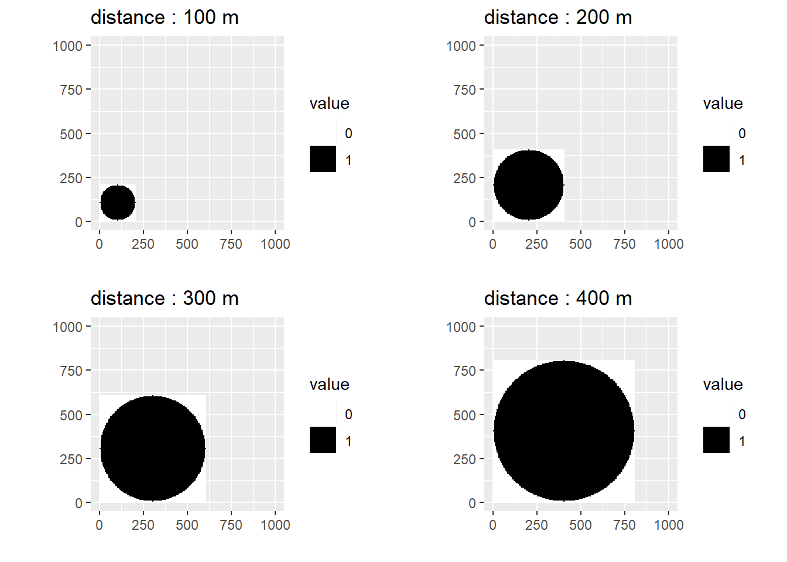
En plus de la matrice spatiale, nous devons définir une matrice de dissimilarité entre les modalités (catégories) de la variable qualitative. Nous proposons de considérer que les catégories Végétal haut et Végétal bas ont une distance de 0,5 entre elles, tout comme les catégories de surface Minéral bas et Minéral haut. Par contre, la distance est fixée à 1 entre les surfaces végétales et celles minérales (tableau 2.13).
| MB | MH | VB | VH | |
|---|---|---|---|---|
| Minéral bas (MB) | 0,0 | 0,5 | 1,0 | 1,0 |
| Minéral haut (MH) | 0,5 | 0,0 | 1,0 | 1,0 |
| Végétal bas (VB) | 1,0 | 1,0 | 0,0 | 0,5 |
| Végétal haut (VH) | 1,0 | 1,0 | 0,5 | 0,0 |
Finalement, nous calculons l’indicateur d’autocorrélation spatiale ELSA avec uniquement des rayons de 100 et de 400 mètres afin de limiter le temps de calcul. Pour ce faire, nous utilisons le package geocmeans et ses fonctions circular_window et elsa_raster.
## Avec geocmeans, la première catégorie doit avoir la valeur 0
laval_data <- laval_data - 1
## Définition des fenêtres circulaires à 100 et 400 mètre
w100 <- circular_window(100,5)
w400 <- circular_window(400,5)
## Calcul de l'indicateur ELSA
elsa_100 <- elsa_raster(laval_data, w100, matrice_dissim)
elsa_400 <- elsa_raster(laval_data, w400, matrice_dissim)
## Cartographie des résultats
carte1 <- tm_shape(elsa_100) +
tm_raster(palette = "RdYlGn", n = 6,
legend.is.portrait = FALSE, title = "ELSA 100m") +
tm_layout(legend.outside = TRUE, frame = FALSE,
legend.outside.position = "bottom",
legend.stack = "horizontal",
legend.text.size = .55)
carte2 <- tm_shape(elsa_400) +
tm_raster(palette = "RdYlGn", n = 6,
legend.is.portrait = FALSE, title = "ELSA 400m") +
tm_layout(legend.outside = TRUE, frame = FALSE,
legend.outside.position = "bottom",
legend.stack = "horizontal",
legend.text.size = .55)
tmap_arrange(carte1, carte2, ncol = 2)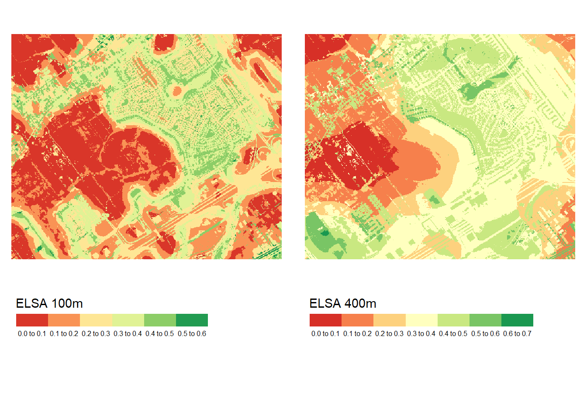
La figure 2.38 révèle que l’utilisation d’une matrice circulaire de 400 mètres lisse trop les résultats. Par conséquent, nous privilégions ceux obtenus avec une matrice circulaire de 100 mètres. Puis, avec le code ci-dessous, nous souhaitons identifier les bâtiments avec un environnement immédiat (défini à 100 mètres) avec une forte hétérogénéité spatiale, c’est-à-dire végétalisé.
# Nous isolons les bâtiments avec forte dissimilarité à proximité
# la valeur de l'image de sortie (buildings_green) sera 1
buildings_green <- (laval_data == 1) & (elsa_100 >= 0.4)
# Nous isolons les bâtiments avec faible dissimilarité à proximité
# la valeur de l'image de sortie (buildings_other) sera 2
buildings_other <- ((laval_data == 1) & (elsa_100 < 0.4)) * 2
# Nous combinons les deux images
raster_buildings <- buildings_green + buildings_other
tmap_mode("view")
tm_basemap(c("Esri.WorldImagery", "OpenStreetMap"))+
tm_shape(raster_buildings) +
tm_raster(palette = c(alpha("white",0), "green", "grey"),
title = "Bâtiments",
labels = c("Transparent (0) : autre que bâtiments",
"Vert (1) : forte dissimilarité",
"Gris (2) : faible dissimilarité"),
style = 'cat', zindex = 1)Sur la carte ci-dessus, nous distinguons clairement deux groupes de bâtiments avec une forte hétérogénéité spatiale dans leur environnement immédiat (en vert) : ceux en bordure du quartier résidentiel et ceux situés le long des rangs Saint-Elzéar Est et Haut-Saint-François au nord-ouest. À l’inverse, les bâtiments au cœur du quartier résidentiel de banlieue affichent une faible hétérogénéité spatiale dans leur environnement immédiat (en gris).
Indicateur ELSA : données vectorielles et test d’inférence
Données vectorielles
Si les données sont vectorielles et non matricielles, il convient alors d’utiliser la fonction elsa_vector du package geocmeans.
Indicateur ELSA et test d’inférence
Dans les fonctions elsa_raster et elsa_vector, aucun test d’inférence n’est implémenté pour obtenir une valeur de p locale. Toutefois, il est assez facile dans R d’appliquer la méthode par simulation Monte-Carlo décrite dans l’article de Naimi et al. (2019). Appliquée à des données matricielles, la démarche est la suivante :
Créer 999 images dont les valeurs des pixels sont tirées aléatoirement avec remplacement.
Recalculer l’indicateur ELSA pour chaque image.
Pour chaque pixel, compter le nombre de fois où la valeur observée de l’indicateur ELSA est supérieure ou égale à celles des 999 valeurs simulées.
La pseudo valeur de p pour chaque pixel i s’écrit alors :
\[ \text{Pseudo valeur de } p_i = (M+1) / (R+1) \text{ avec :} \tag{2.25}\]
\(M\) étant le nombre de fois que la valeur observée est supérieure ou égale à la valeur simulée (\(E_i \ge E^*_{ir}\)) (Naimi et al. 2019, pp. 33-35).
Appliquons la démarche ci-dessous dans R pour obtenir une pseudo valeur pour l’indicateur ELSA obtenu sur l’image avec un rayon de 100 mètres. Notez que pour améliorer la vitesse de calcul, nous convertissons notre objet terra::rast en une matrice.
## Conversion des données matricielles en matrice
base_data <- terra::values(laval_data, format = "matrice")
## calcul de la proportion de chaque catégorie
N <- ncell(base_data)
probs <- table(base_data) / N
## Conversion de l'indicateur ELSA (à 100 mètres) en matrice
base_elsa <- terra::values(elsa_100, format = "matrice")
## Création d'une matrice qui contiendra les pseudo valeurs de p
p_matrix <- matrix(0, nrow = nrow(base_elsa), ncol = ncol(base_elsa))
## Lancement des 999 simulations
for(i in 1:999){
# pour chaque simulation, nous tirons au hasard la valeur de chaque pixel
sim_values <- sample(c(0,1,2,3), size = N, replace = TRUE, prob = probs[1:4])
# Nous enregistrons les valeurs tirées au hasard dans une matrice
dim(sim_values) <- dim(base_elsa)
# Calcul de la valeur de ELSA simulée
sim_elsa <- elsa_raster(sim_values, w100, matrice_dissim)
# Comparaison des valeurs de l'indicateur ELSA (valeurs simulées versus observées)
comp_matrix <- base_elsa >= sim_elsa
# Ajout à notre matrice des valeurs de p
p_matrix <- p_matrix + comp_matrix
}
## Conversion des comptages en pseudo valeur de p
p_values <- p_matrix / (999+1)Dans la matrice obtenue, les pseudos valeurs de p représentent la probabilité que l’indice de ELSA obtenu sur les données réelles soit inférieur à celui obtenu si les données étaient réparties aléatoirement sur le territoire. Une pseudo valeur de p inférieure à 0,001 signifie donc qu’il n’y aurait que 0,1 % de chance que le hasard produise un patron d’autocorrélation spatiale plus fort que celui observé avec les données initiales.
raster_p_vals <- laval_data
values(raster_p_vals) <- p_values <= 0.001
tmap_mode("plot")
Carte1 <- tm_shape(raster_p_vals) +
tm_raster(palette = c("grey", "red"),
style = 'cat',
title = "Significativité",
labels = c("Non significatif (p > 0,001)",
"Significatif (p <= 0,001)")) +
tm_layout(legend.outside = TRUE,
frame = FALSE,
legend.outside.position = c("bottom", "center"))
Carte2 <- tm_shape(elsa_100) +
tm_raster(palette = "RdYlGn", n = 6,
legend.format = list(text.separator = "à"),
title = "ELSA 100 mètres") +
tm_layout(legend.outside = TRUE,
frame = FALSE,
legend.outside.position = c("bottom", "center"))
Carte3 <- tm_shape(laval_data) +
tm_raster(palette = c("#fbd4b4", "#e36c0a", "#92d050", "#76923c"),
style = 'cat',
title = "Classe (catégorie)",
labels = c("1. Minéral bas",
"2. Minéral haut",
"3. Végétal bas",
"4. Végétal haut"))+
tm_layout(legend.outside = TRUE,
frame = FALSE,
legend.outside.position = c("bottom", "center"))
tmap_arrange(Carte3, Carte2, Carte1, ncol=3)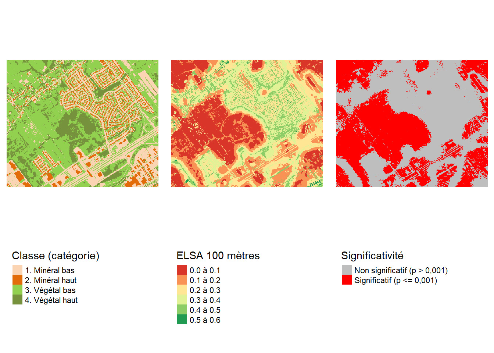
La figure 2.39 montre en rouge les pixels situés dans des secteurs avec une forte autocorrélation spatiale, soit ceux principalement végétalisés ou principalement minéralisés.
2.5 Quiz de révision du chapitre
Parmi les matrices de pondération spatiale ci-dessous, lesquelles sont des matrices de contiguïté?
Relisez au besoin la section 2.2.
En anglais, comment est appelée une matrice selon le partage d’un nœud?
Relisez au besoin le début de la section 2.2.
Comparativement à une matrice de l’inverse de la distance, une matrice de l’inverse de la distance au carré accorde un poids plus important aux entités proches.
Relisez au besoin la section 2.2.2.3.
Quels sont les avantages de la standardisation en ligne des matrices de pondération spatiale?
Relisez au besoin la section 2.2.3.
Quelle est la différence entre les deux mesures locales de Getis et Ord?
Relisez au besoin la section 2.4.1.
Parmi les quatre catégories de la typologie basée sur le nuage de points du I de Moran, lesquelles renvoient à de l’autocorrélation spatiale locale positive?
Relisez au besoin la section 2.4.3.
Quelles sont les trois manières de tester la significativité des mesures d’autocorrélation globales?
Relisez au besoin la section 2.3.1.3.
2.6 Exercices de révision
Exercice 2. Construction de matrices de pondération spatiale
Construisez les matrices de pondération spatiale suivante pour la région métropolitaine de Québec :
- Matrice de pondération spatiale selon le partage d’un segment commun (voir la section 2.2.4.1).
- Matrice de pondération spatiale selon l’inverse de la distance au carré, à partir de la distance maximale et un SR et son voisin le plus proche (voir la section 2.2.4.4).
- Matrice de pondération spatiale selon le critère des plus proches voisins (k = 2) (voir la section 2.2.4.5).
Complétez le code ci-dessous.
library(sf)
library(spdep)
library(tmap)
## Importation de la couche des secteurs de recensement
SRQc <- st_read(dsn = "data/chap02/exercice/RMRQuebecSR2021.shp", quiet=TRUE)
## Matrice selon le partage d'un segment (Rook)
Rook <- À compléter
W.Rook <- À compléter
## Coordonnées des centroïdes des entités spatiales
coords <- st_coordinates(st_centroid(SRQc))
## Matrice de l'inverse de la distance réduite
# Trouver le plus proche voisin avec la fonction knn2nb
k1 <- À compléter
plusprochevoisin.max <- max(unlist(nbdists(k1,coords)))
# Voisins les plus proches avec le seuil de distance maximal
Voisins.DistMax <- À compléter
# Distances avec le seuil maximum
distances <- À compléter
# Inverse de la distance au carré
InvDistances2 <- À compléter
# Matrices de pondération spatiale standardisées en ligne
W_InvDistances2 <- À compléter
## Matrice des plus proches voisins avec k = 2
k2 <- À compléter
W.k2 <- À compléterCorrection à la section 9.2.2.
Exercice 3. Calcul du I de Moran global
Calculez le I de Moran global pour la variable D1pct (pourcentage du premier décile de revenu des familles économiques) de la couche SRQc avec les différentes matrices de pondération spatiale (voir la section 2.3.2.2). Complétez le code ci-dessous.
library(sf)
library(spdep)
library(tmap)
## Cartographie de la variable
tm_shape(SRQc)+
tm_polygons(col="D1pct", title = "Premier décile de revenu (%)",
style="quantile", n=5, palette="Greens")+
tm_layout(frame = F)+tm_scale_bar(c(0,5,10))
## I de Moran avec la méthode Monte-Carlo avec 999 permutations
# utilisez la fonction moran.mc
# avec la matrice W.Rook
À compléter
# avec la matrice W_InvDistances2Reduite
À compléter
# avec la matrice W.k2
À compléterQuelle matrice de pondération spatiale donne la dépendance spatiale la plus forte? Correction à la section 9.2.3.
Exercice 3. Mesures d’autocorrélation spatiale locales
Calculez et cartographiez les mesures d’autocorrélation spatiale locale pour la variable D1pct de la couche SRQc avec la matrice spatiale W.Rook :
- Mesure \(G_i\) de Getis et Ord (voir la section 2.4.1).
- Typologie du nuage de points du I de Moran avec la fonction
localmoran(voir la section 2.4.3).
Complétez le code ci-dessous.
####################
## Calcul du Z(Gi)
####################
SRQc$D1pct_localGetis <- localG(À compléter,
À compléter,
zero.policy=TRUE)
# Définition des intervalles et des noms des classes
classes.intervalles = À compléter
classes.noms = c("Point froid (p = 0,001)",
"Point froid (p = 0,01)",
"Point froid (p = 0,05)",
"Non significatif",
"Point chaud (p = 0,05)",
"Point chaud (p = 0,01)",
"Point chaud (p = 0,001)")
## Création d'un champ avec les noms des classes
SRQc$D1pct_localGetisP <- cut(SRQc$D1pct_localGetis,
breaks = classes.intervalles,
labels = classes.noms)
## Cartographie
À compléter
####################
## Typologie LISA
####################
## Cote Z (variable centrée réduite)
zx <- À compléter
## variable X centrée réduite spatialement décalée avec une matrice Rook
wzx <- lag.listw(À compléter)
## I de Moran local (notez que vous pouvez aussi utiliser la fonction localmoran_perm)
localMoranI <- localmoran(À compléter)
plocalMoranI <- localMoranI[, 5]
## Choisir un seuil de signification
signif = 0.05
## Construction de la typologie
Typologie <- ifelse(zx > 0 & wzx > 0, "1. HH", NA)
Typologie <- ifelse(zx < 0 & wzx < 0, "2. LL", Typologie)
Typologie <- ifelse(zx > 0 & wzx < 0, "3. HL", Typologie)
Typologie <- ifelse(zx < 0 & wzx > 0, "4. LH", Typologie)
Typologie <- ifelse(plocalMoranI > signif, "Non sign", Typologie) # Non significatif
## Enregistrement de la typologie dans un champ
SRQc$TypoIMoran.D1pct <- Typologie
## Couleurs
Couleurs <- c("red", "blue", "lightpink", "skyblue2", "lightgray")
names(Couleurs) <- c("1. HH","2. LL","3. HL","4. LH","Non sign")
## Cartographie
tmap_mode("plot")
À compléterCorrection à la section 9.2.4.